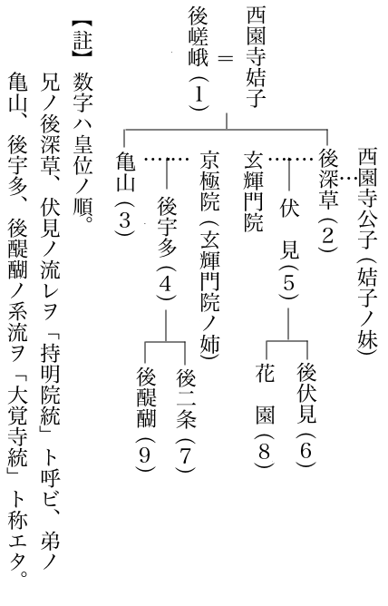

ほどなく、
「まだ帰らぬの」
「……帰りませんなあ」
「たかの知れた放免一人、あの二人が、討ち損じるはずはないと思われますが」
豊麻呂には、自責もあった。
俊基の身をここへ隠し、つき
「ご窮屈でも、弁ノ殿には、しばし、ここにてお待ち下さいませぬか」
「お身はどこへ？」
「万一のため、部下に命じて、高野街道を中心に、手分けさせておりますが、それらの者も、なぜか、まだ一人とて立ち帰って来ません。自身、石川まで行って、
豊麻呂は出て行った。
いや、そんな悠長さではなく、飛ぶがごとく駈けてゆく背は、いかにも自責のつよい若者の純情ぶりを思わせる。
ところが。――その豊麻呂もなかなか戻って来なかった。すでに
「どうした？ 豊麻呂」
「なんとも、
「さては、不首尾か」
「が、部下どもの探りによれば、
「はての。二人は、弓は持たなかったはず。さらには、同類の偽山伏が、ほかにも大勢いたとすれば、何ぞの手違いが、起ったものに相違ない」
「されば、放免どもはいつか、弁ノ殿がここにお
「なに、ここをも？」
俊基は、
すべては
いちどは鎌倉に
まもなく。散所民の板小屋や
「喧嘩だ、喧嘩だっ」
と、
喧嘩は
が、今夕のは、ただ事でなかった。出屋敷をつつむ六波羅の捕吏と、散所民との間に起ったものである。
昼、淀川方面から古市へ乗り込んで来た一群があった。これを待ッていたらしい地元の
「それっ」
捕手頭の
「この内に、御不審のかかった人間が潜伏しおるとの
とばかり、一挙に出屋敷の内へ、混み入ろうとしたものだった。
この日、豊麻呂の旨をふくんで、すでに殺気だッていた出屋敷の雑用人らは、
「そんな者はいない！」
「よそに問え」
「散所ノ太夫のおゆるしがなくば一歩も通せぬ」
と、棒、槍、野太刀、狩弓などを持って立ちふさがった。
出屋敷の倉番、
かれら浪人の生態や、日頃の言なども、おもしろい。「おれの
そして、明け暮れ、ばくちに
「――時に
ここのみならず、こうした浪人輩は、
とにかく、そんな
「踏みつぶせ」
とも、出られなかった。
さりとて、この中と睨んでいる日野俊基を、やみやみ見のがす彼らでもない。押し問答も、数語で終った。
「面倒だ。土塀を越えろ。どこからでも躍りこんで、
乱闘が始まッた。
捕手方も
夜になった。石河原の散所街の上に、大きな月がのぼる。それが一そう地上の喧騒を不気味にしていた。
「まるで
捕吏の
いちど、崩れた捕手方も、たった今、六波羅からの増援が着いたと聞いて、また気勢をもりかえしている。だが、それに対峙する出屋敷の浪人方へも、散所民の加勢が刻々とふえて、
「一匹も中に入れるな」
と、まるで小合戦の様相だった。
問題はもう、日野俊基の身を、渡す渡さぬ、などではない。裸の民と権力との抗争だ。
今日にかぎらず、この種の
散所一揆
といえば、事長びくも覚悟か、手を
まさに、今夜の形相は、それに近い――。
加うるに、道明寺川から駈けつけた六波羅兵は、おそらく探題直命の者どもだろう。捕吏、放免などの手ぬるさとは違って、
「
いきなり、矢を射浴びせて、
「かまわぬ。片っぱしから、虫ケラ塚としてしまえ」
と、まるで戦場へ立ち向うような勢いで、まず前衛の散所民から駈けちらしにかかった。
「豊麻呂」
「弁ノ殿」
二人は、
そこは出屋敷の役部屋だった。灯もなく、さしいる月の白さだけが、死の床を思わせる。
「……だめだのう、もう」
「そんなことはありません。お心づよく、この豊麻呂をお頼みくださいまし」
「
いううちにも、ここの屋根にまで、ばらばら石の雨が降っていた。当然、それはすでに、出屋敷の構内へ、はや六波羅の手が混み入っていることを教えているものだった。
「……菊王も、頼春もまだ帰らず、捕吏どもは、わしを
「いやいや、石川の父の太夫も、この御難儀を、坐視しているはずはありませぬ」
「月の空から、石が降る世の中だ。なかなか人の心もさだかでない」
「父の散所ノ太夫を、二心の者と、お疑いなされますか」
「ではないが、身に帯ぶる、みかどの
「あっ。ここもはや」
豊麻呂は急に、彼の手をとって、外へ出た。
そして、駈け乱れる
俊基は、
「……さても、われながら、
公卿に生れ、殿上に仕えてきた身が、なにを求めて、こんなあさましい窮地に自身を追いこめて来たのやら。
と思いはしても、この
この味噌倉の闇へも、はや死の手は刻々に近づきつつあるかもしれない。
しかし、じぶんの亡魂はかならず、北条幕府の滅亡を見るだろう。と考えて、彼の胸の悲歌は、笑いをふくんだ。そして自身の死もまた、荘厳な国の犠牲とかがやき
「弁ノ殿」
扉のすきから、外の豊麻呂が、小声で告げた。
「お気づかいなされますな。あの火の音は、捕手どもをくらますため、散所の者が、わざと二、三ヵ所に放ったもの。炎は、遠くでございますから」
いわれて、気づいた。
俊基が上を仰ぐと、
そのうちに。
「すわ」
彼も全身をそそけ立てた。突然、土倉の近くを、駈け乱れる跫音がしたのだ。おもわず、外へ、
「豊麻呂」
二度ほど呼んだが、その時、豊麻呂の答えもなかった。
「ついに来たか」
彼の手は、ふところの毒薬の一包を、無意識に触れていた。
たとえ、幕吏がこれへ踏み込んで来ても、生ける俊基を捕えることはできないのだ。彼らは毒を
「ここには、灯もない。灰とすべき火もなくては？」
とたんに、がらっと、土倉の扉があいた。
外の赤い闇を後ろに、数名の影がそこに見えた。太刀の柄へかかッた俊基の右手は、盲目的にそれへ向って、抜き打ちを加えようとした。
「私ですっ」
跳び退いた一人がさけんだ。
「――弁ノ殿、菊王でございまする」
「やっ、戻ったか」
「
「して、頼春は」
「残念ですが、頼春どのは、たッた今、捕われました。わざと、弁ノ殿に似せて、みずから捕われて行ったのでございまする」
「俊基の身代りにか」
「一とき、ここの囲みを解くためにです。……が、すぐに、それは弁ノ殿に非ずと敵もさとるでしょう」
「いまのうちです」
豊麻呂も一しょに
「すぐ、ここを
いまは何を
せかれるままに、俊基は土倉を出て、堀の方へ走ッた。
一そうの荷舟がある。菊王が先へ飛び乗り、つづいて、俊基も手をとられて、
豊麻呂が、
「では、先々とも、お心つけて、首尾よう
「おう、さらばだ」
俊基は、苫の蔭から、
「もう案じるな。ここが助かるような身の武運なら、先々とても、首尾はよかろう。豊麻呂、いずれ
菊王は、
そこらにあった
いや、この辺は、水の
「菊王」
「は」
「あいにく、こよいは満月。あまり
「して、どう落ちのびまするか。ここは川ノ辻です。西へ下れば、摂津の
「高野へ向うのに、水路はとれぬ。それにまた、川筋には川関もあるはず。ひとまず、舟はどこかへ
舟は向きを代える。
芦と芦のあいだを縫い、流れの速くない江のふところを探して行く。貧しい部落小屋が岸に見えた。しかし、灯もなく、騒がしい気配も見えない。菊王は一つの杭に
「……
俊基は独り思った。
やっと落着きをえた主従は、月もささぬ
菊王が、昨日からの一ぶ始終を語っていたものであろう。また今日、立ち帰って来た出屋敷の危急を見て、頼春が、「こここそ、自分の死所」とばかり、われから捕吏に身をまかせて、捕われて行ったことなども、つぶさに告げていたにちがいない。
「……が、事々残念ばかりでもございません。加賀田の山奥では、やがては宮方のお力にもなろうかと思われる一隠者に出会いました。その人は」
と、彼が、毛利
「しっ……」
と、苫の外へ顔を出した。
つい近くの杭に、もう一そうの
赤子の泣き声は、まもなくやんで、夜はまた、芦のそよぎもない、水しじまに返っていた。
「やれやれ、赤子でよかった」
菊王は胸をなでおろして。
「……舟住居の夫婦者か何ぞでございましょう。まず大事はありませぬ」
彼はまた、話をつづけた。
毛利時親
についてである。
菊王としては、
おおむね、知識の人は他の知識を、想像だけでまず
俊基がそんな軽薄ではないにしろ、彼とて、新しい
「そうか。……つまりは
「いえ、どうして」
菊王は、主人の無残な結論へ一そうムキになって言った。
「なかなか、そのような、ぬるい人物とは、見受けませなんだ。いわゆる
「そちは、ひどく心酔だな」
「楠木家の御兄弟――正成、
「山家に住んで、ちと
と、俊基は手きびしい。
もっとも、彼のような実践第一とする志士的な眸には、口のみ
と。二人の話の途切れに……すぐ近くの杭の
「ち。よく泣かせるナ」
菊王は舌打ちして。
「わが殿にも、いまのまに少しなと、うとうと
「泣く子はぜひもない。まして人の子」
「どこか、
「それはいいが、大丈夫か、辺りの様子は」
「ここだけでなく、ほかにも人影のない岸はありましょう。……あれ、またヒイヒイと、ひきつけそうな泣き狂いだ。これや、いけない」
「……もし」
と若い男が、
「見ず知らずのお方へ、とんだ御無心でございますが、よんどころなく、病人と赤子をおいて、ちょっと街まで一ト走り行って来たいのでございます。何とも恐れいりますが、その間、ここの
「さあ？ ……」と、菊王には、
そのあとも、ただ、
「それはさぞかし、お困りだろうが」
とだけ呟いて、苫の蔭なる俊基へ、
俊基は、そこから、
浅黄布の
けれど、
「菊王」
「はい」
「気のどくそうな。……ま、暫時ならば、心配なく用事に行って来るがよいと、申してやれ」
「そういたしますか」
と、菊王は、隣舟の男へ。
「おあるじが、ああ仰っしゃって下された。しかし、こちらも、泊り舟ではない。早く帰ってくれぬと困るが」
「はい、はい。……ありがとうぞんじます。では、大急ぎで行ってまいりますれば」
「街へ何しにおいでなのか」
「それがでございますよ」
と男は、いちど苫へ入って、妻の枕もとへかがんでいた。何か病人へ言いふくめてでもいるらしい。それからまた、舟べりへ姿を見せて。
「なにしろ、家内の
「ほ。……そんな騒ぎがあったのかね」
菊王は、とぼけて。
「――それで、用達しも出来ずにいたわけなんだね」
「諸所に火の手は見えますし、六波羅衆が入って、合戦になったとか、いや捕物だとか、この辺の散所衆まで、棒キレなど持ってみな出てゆく様子。とても買物などには上がれません。……で、街の空のみ眺めていましたが、赤子は
「じゃあ、舟にはほかに、誰もいないのかい」
「生れてまのない赤子と、家内が寝ているだけなのでございます。それの
男は、あとを頼むと、心も空のように、岸へ上がって、どこへともなく駈けて行った。
菊王は見送ってから、
「いじらしいなあ」
そしてまた、独り
「しがない舟芸人とはいうものの、女房思いな、やさしげな男だ。散所者は荒っぽいというが、こんな夫婦もあるのを見れば、そうでもないのか」
すると、苫の下で、
「菊王」
俊基がまた呼んでいた。彼も、家に残してある妻の
「ちょっと、隣の舟を
「なるほど、そう仰っしゃれば？」
菊王も気になっていたらしい。そっと、隣の舟へ這い渡って行った。
暗い苫のおくには、ぷんと病臭のようなものが
半ば、黒髪にかくされて、女の顔は、見られようもなかったが、その白さは、柳の糸に架かった月ともいえようか。それに
「…………」
そうっと、出来るだけ静かに、彼は俊基のそばへ戻って来た。
「別条はございません。泣きつかれて、赤子もスヤスヤ病人のふところで寝ついたらしゅう見えまする」
「女は」
「ぎょっとして、木枕の顔をうごかした風でしたが」
「それきりか」
「はい。物も言いえぬ
「思えば、気のどく。今日のことも、この俊基から起った騒ぎだ。これを見ても、人の世のことは、一波が万波。誰へどんな禍いがおよんで行くやら分らぬものだな」
「そこまで、
「そうなのだ。わし自身とて、
「え。これを
「いや、一
「それはさぞ、よろこびましょう。やがて女の良人も戻りましょうが、その前にお志を告げて、いまの怯えを慰めてやりましょうず」
菊王は、それを持って、再び、隣の
「菊王、なぜ沈んでおる」
「いえ、沈んでなどおりませぬが、どう考えても思い泛かんでまいりません」
「何をば？」
「いま、近々と見て来た舟芸人の妻ですが」
「それが何としたのか」
「たしかに、どこかで見たことのある女房なのです。けれど、はっと思ったのは
「つまらぬ迷いを」
そこへ、彼女の良人が、息もせかせか岸の上に姿をみせた。そして隣舟へ帰るやいな、何度も礼をくり返した。
「や。早かったな。赤子の
「おかげで」
と、男はふたたび、ていねいに頭を下げた。
大道芸人もおなじ舟芸人といえ、やはり身にそなわる芸味がにじみ出るものだろうか。せまい舟べりで小腰をかがめた姿の線がいかにもいい。この辺の散所民と同視していただけにふと目をひかれた。
はてな？
菊王はまたしても、男の病める妻を思い合わせた。が、やはり思い出せなかった。といって、夜舟ばなしに夜を
「なにしろ、舟住居ではたいへんだな。大事になさいよ。赤子もお内儀も」
「ありがとうございました。おかげで
「ああ、夜がすみが深くなったな。月もぼやけて来たし」
「ままこの先の
「おおよ。おさらば」
ややしばらく、菊王の棹は、水の流れを探り探り、人なき岸もやと、さまよっていた。
すると、朧な中に、
「旅のお方。……もうしっ。さきほどの、旅のお方」
と、つい今しがた、別れて来たばかりの男の声が近づいて来た。
舟影はすぐ見えた。男は、櫓づかを片手に、
「少々、お待ち下さいまし。お呼びとめして、重ねがさね、失礼ではございますが」
「まだ、何ぞ用かい」
「なんとも、不覚でございました。お別れした後で、病床の妻から、貴重なお薬だのお金をいただいた由など、涙ながら聞かされまして」
「で、礼を言いに追って来たのか。いや、あれはお
「はい。その御迷惑も、お察しせぬではございませぬ。……けれど、妻へいただいたあのお
「えっ」
菊王の手の
「何をばかな。あれやお
「お気色を悪くなさらないで下さい。常なら、さまで心にとめもいたしません。ところが、さいぜん街へまいった時、はしなく、
「な、なに。……町で恐い噂を耳にしたからだと」
「はい」
「わしたちのことをか」
「もしや、と存ぜられますが」
「ど、どんな取沙汰を」
夜目だが、菊王の語気、ただの
が、男は自己の善意にかたく
「さ……。その儀でございますが。ここは、さりげのうお別れした方がよいか、または、存ずる旨を、ありていにお告げ申した方が正しいだろうか、
「…………」
「しかし、行きずりの御縁と見すごし、万一にもお行き先にて、取返しのつかぬ
「ふうむ」
なんのために。また、何を知って。
もう菊王の一存では、返辞のかぎりでもないし、判断もつかなかった。彼のあいまいな
「……菊王」
「はっ」
「悪意の者ではなさそうな」
「と、私も存じますが」
「この夜がすみ。舟べりと舟べりとの高声などは、心ないわざ。ともあれその男を、こなたの苫へ招き入れ、膝ぐみで仔細を聞いてみたらどうか」
すると、男の舟から、
「ならば、そこの
と、先に
川洲の島には、鮎小屋らしい小屋があった。俊基がその辺に腰をおろすと、菊王は万一を警戒してか、ひたと主人の脇にちかく片膝を折る。そして左の片手を太刀の
「さ。何をお耳に入れんとするのか、早ういえ。申してみい」
「はい。お手間をとらせてはなりませぬ。それゆえ、あけすけに申しまするが、眼の前におわせられるのは、弁ノ殿、日野俊基朝臣でいらっしゃいましょうが」
「うぬっ」
菊王は、ひざまずいてなどいられなかった。思わず身を突っ立てて。
「
「あ、もし……。お隠しなされますな。街の噂、妻にいただいた貴薬。二つを思い合せて、さてはと、思い当ったのでございまする。まして、こう近々とお目にかかりますれば」
「菊王、下にいよ」
俊基は、彼を抑えて、自身、男へむかって言った。
「つつむまい。いかにも
「はい。街で聞いた六波羅衆のうごきによると、やがて川筋すべても洗われて来るようです。また、高野路の諸所も手配りが行き渡っているとか。どうぞ、お旅路の先をかえて、一刻も早く、ここをお落ちなされますように」
男の忠告を、俊基は疑わなかった。もし欲心の上なら、密訴して、六波羅兵をみちびいて来るはずだ。――さはなくて、こちらの一片の情に、彼も恩を感じてくれたものだろう。
「かたじけない」
と、心から彼はいった。
男は、彼のいんぎんな礼に、かえってあわてて。
「いえいえ、お礼なら手前の方こそ、山々申さねば相なりませぬ。それよりは、少しもお早く、ここを落ちる御思案をお決めなされませ」
「そちは、当所の者か」
「ごらんの通りな舟芸人。まずは散所の住民も同様な者でござりまする」
「ならば、この辺の地理には
「高野へは、ぜひともお越しなさらねばなりませぬか」
「いまは実を打ち明けるが、或る御使いをおびて、第一に紀州高野へ、次に
「では、お着がえも相なりませぬな。川関にもかからず、地頭の領も経ずに、高野へ参るには、ただ一つ、ここより天野山金剛寺の
「おう、それを
「ご安心な地へ出るまで、てまえが、ご案内いたしましょうが、そのお姿では」
と、男は鮎小屋の内を覗き、破れ笠や、
「これで、一時、お身をお包みなされませ」
「……が、そちはその間、病の妻と赤子をどうしておくか」
「お案じ下さいますな。
男は、自分の舟へもどって、すぐまた、苫の下から上がって来た。
もう深夜だが、一切、口もきかずに三人はただ歩いた。
男は部落の裏を巧みに縫って、やがて一本の街道を早足で横切ると、あとはいちめんな
「では、お別れ申しまする。……彼方の山が
菊王も、ここではもう、疑念を一掃して、男の親切を本心から謝していた。同時に、今の機会を失ってはと、
「ま、お待ちなされ。このままの、お別れも何やら……」
と、俊基と共に、野路の石に腰をおろした。そして、途々も
「たしかに、どこかで見た
「これは、お買いかぶりで……」
男は、菊王に問われて、はたと、恥じらい顔だった。
「元々、ただの舟芸人にすぎませぬ。氏素姓とてない散所者。妻とて、同様にござりまする」
それは、迷惑そうというよりも、
「いや、さしつかえなら、
と、俊基が代って訊くと。
「オ、それも申さいでおりましたか。……イヤどうも失礼をいたしました。てまえは、
「雨露次？」
「はい」
「杉ノ本は、生地の名か」
「さようで」
「すると、伊賀だの。伊賀の一ノ宮には、古くから山田
「め、めっそうもない」
雨露次は、俊基の知識で、そこまで探り当てられると、ひどくあわてて。
「ただ今も申したような、身過ぎ世過ぎの大道芸、山田申楽の端くれにも
また菊王が、そのそばから、
「して、お内儀の名は？」
と、彼の空虚をついた。
妻の名は、秘す気もないのか、または急に嘘も出なかったのか、ふだん呼びなれているままに、
「家内は、
と、彼は答えた。
「卯木どのか」
なんども、菊王は呟いて。
「……卯木どの。それも、どこかで聞いたような気はするが？ ……さて、これ以上根ほり葉ほりは、ごめいわくであろ。それだけ伺っておけば、またいつか、再会の縁にめぐまれぬこともあるまいし。――では、雨露次どのとやら、ご息災に」
「ありがとう存じまする。御縁もあらばまた……。ごきげんよう」
雨露次は、もとの道の方へ、独りすたすた引っ返して行った。
彼と別れて、主従が、岩室を越え、次の鉢ヶ峰寺の一堂に眠ったのは、明け方ぢかい頃だった。
「……あっ？」
と、その際、俊基が旅衣を解きかけつつ、異様な声を発したので、菊王も、故なくぎょッとしていると、
「しまった」
と、くり返して。
「菊王、何としようぞ、知らぬこととはいえ、宵のうち、わしは心もどうかしていたのであろうか。……常に肌に持っている毒薬を、旅薬の
「げっ？」
「典医寮からくれた旅薬はこれにあるが、人知れず持っていた毒薬の方が肌にない」
「では、あれや毒薬だったのでございますか。そ、そんな物を、常にお持ちとは」
菊王も仰天した。
あんなにまで、涙を流してよろこんでいた雨露次の妻である。もう今頃は、
良人の雨露次が帰って、いかに恨むことであろうか。二人は、慄然としたが、どうしようもない。ふいに耳をついた鉢ヶ峰寺の鐘の音に打たれて、二人とも蒼白な顔を鐘の行方に
「またそろそろ腹をすかして、
野路をいそぐ男の胸に、そんな思いがたえずあった。
俊基主従を途中まで送って、人目にふれぬ暗いうちにと、河内野を駈けるように、もとのわが家の苫舟へ帰ってゆく
ほどなく、
さきに、越えた浅瀬の水を彼はザブザブ渡りこえて行った。そして、以前の川の
「ああ」と異常な緊張から解かれたような風だった。――袴のすその水をしぼって、しばらくは、そのまま空を仰いでいる。
ゆうべの満月は、あとかたもない。
その月も、俊基朝臣や菊王の姿なども、すべてが、一夜の夢だったような心地がする。
どこか、東の山の
彼は知らない。寸前に待つ運命を、まだ何も
しかし、彼と別れた俊基は、ちょうど、この時刻ごろ、鉢ヶ峰寺の一堂で、心にもない昨夜の過失に気がつき、
所持の毒薬を、べつの旅薬とまちがえて、彼の妻に与えて来たことを今朝となって知ったのだが、恐らくは、それを告げるためだけに、ここへ駈け戻って来るはずもないだろう。――ましてや、雨露次に虫の知らせもなかったのは、ぜひもない。
「……
わが家の
「いま帰ったよ。……さぞ心細かったであろう。
舟べりを踏む。
そして、
「卯木」
と、もいちど呼んだ。――が、返辞はない。
苫の内の灯は消えているし、あの眼ざとい妻が、寝返りを打つ気配でもなかった。雨露次は
そして、そこらの木枕やら寝床やらを、まっ暗な中で、狂気のごとく、なで廻しつつ、
「あっいない。ど、どこへ」
彼のつまさきで、器が砕け、とたんに
「卯木っ。卯木……」
また外へ出て、うろうろと、苫の外を巡り巡り、水へ向って、声をからした。――果ては、その声も、どっと、ただの大きな
すると、待っていたように、鮎小屋の蔭にひそんでいた一群の人影が、わらわらと、すぐ彼の姿を埋めていた。いうまでもなく、六波羅の手の者どもだった。
うむをいわせず、
「何をするっ」
と、彼の方も、ままにはなっていなかった。
こうした刹那には、つい正味の自己が出てしまうのも、ぜひがない。それまでの彼とは似もやらず、捕手の二、三を足わざにかけて、一瞬に、彼らの重圧の下から後ろへ跳び退がっていた。
「人違いするな。わしはこの辺りの舟芸人じゃ。
「うそをつけ」
あざ
「おい、雨露次とやら。きさまあ侍だな。いまの手なみは舟芸人の芸当じゃあるまい。……いや、そんなことは、あとで訊こう。とにかく
「たむろとは？」
「知れたこと。わざわざ六波羅から駈けつけて、藤井寺に本拠をおいている御人数の溜り場だ」
「そんな所へ、曳かれて行くいわれはない。身に罪の覚えもないものを」
「言い開きなら、たむろで申せ。なんの覚えもない奴が、なぜ、このような
「舟住居は、浮寝の鳥じゃ。その夜その夜、さだまる岸に寝るとは限らぬ」
「では、おなじ
「知らぬ。いずれ、ぬしなき流れ舟か何ぞであろうに」
「知らぬとはいわさぬ。あれは出屋敷の荷舟。
「ばかな」と、雨露次は耳もかさず、
「日野俊基などとは、聞いたこともない。よそに問え」
と、しいて
捕手頭は、それをまた、声高く、
「そうか、うぬがいわぬなら、うぬの女房の口から訊こう。……ばかな亭主だ。ここで、すんなりと泥を吐いてしまえば、病人の女房も、痛い目にもあわず、すぐ
「しゃっ……。では」と、仰天して、
「妻の卯木は？」
「もう一ト足先に、たむろへ曳かれて行ったのだ。それでもきさまは、じたばたするのか。なお、
「む、無慈悲な」
「なにが無慈悲ぞ。女房を憐れと思うなら、
言下に、部下の人数は、おめきかかって、ふたたび雨露次の身を地にねじ伏せた。雨露次はもう手むかいもしなかった。夜は明けて、川ノ辻には毎日の
わずか百余の兵でも、軍が
それも、権威ある寺では、立ち入りなど許さぬが、藤井寺は往年の
「ち、うるさいなあ」
ここの部将らしい虎ヒゲの男だった。一堂の濡れ縁に腰かけて、どなっていた。
「ギャアギャアと、いつまで餓鬼を泣かせておくか。赤子の声などは、変な

兵の一人が駈けよって、それへ答えた。
「
「乳は出ぬのか」
「産後の病とかで、
「やっかいな
部将は
「おい」
と、その顎をまたすぐ、横の兵へ振って。
「この
まもなく、放免溜りから、眼の大きな、
「放免の
「そちが組の頭か」
「さようで」
「どうしたんだ。おとといから、放免組の手では、いっこう何の実績も挙らんではないか」
「おそれ入ります。何せい、
「まだ死骸も見えぬのか」
「見当りませぬ」
「ばかなはなしだ。放免の総頭ともある奴が」
「てっきり、船木頼春にたばかられて、
「彼奴は、ひとかどの侍だ。放免の調べぐらいで、口を開くはずもあるまい。いずれ、六波羅ノ庁の白洲で叩こうわい。それまでは、日夜、警固をおこたるな」
ところが――。
その船木頼春が、たった今、仮牢としておいた
……が、すでに、こときれていたのである。鬼六は、唯一の生き証拠を失ったとして、警固の兵に当りちらし、地だんだを踏みつつもとの方へ戻って来た。
そして、ふと。
さっき、自分がいた堂の濡れ縁の前に、一枚の
「……そうだ、今は、日野俊基の行方を知る生き証人は、この女と、女の良人としかいないのだ。大事に生かしておいて、責めねばならぬ」
鬼六は、黒髪を見すえながら、もとの座へ腰をおろした。
「……女」
「はい」
「名は」
「
「何歳に相なる」
「…………」
本庄鬼六もつい見惚れた。
が。われに返ると、とつぜん、六波羅検断所の白洲で
「幾ツだと訊いておるのになぜ答えん。何事も素直にいわぬと、
「二十六になりまする」
糸のような声である。
二十六か、女ざかりだナ、と鬼六は思う。さらに「……もっと、顔を上げろ」といって見たかったが、気がさして、鬼六もそこまでは、言いえなかった。
苫舟の底に病んで久しいせいだろう。そんな者の妻とは見えぬ
「聞けば、申楽を渡世とする舟芸人の夫婦とのことだが、そちも良人も、ただの散所者ではあるまい。生国はどこだ」
「……はい」
「はいではない。どこだ、生れは？」
「都の辺りでございます」
「そうだろう。都ならではの容姿が見える。して良人の姓は」
「
「それは芸名と申すもの。本名を申したてい」
「いえいえ、七条河原の小屋仲間にいた根からの貧しい芸人です。ほかに名はございませぬ」
「たしか、か」
「……はい」
「ま。そこは、後で洗うとしよう。では、その雨露次は、昨夜から今暁へかけて、病人のそちを独り舟へ残して、そもどこへまいったのか。知らぬとはいわさんぞ。おなじ洲に
「…………」
「それさえ、素直に白状いたすなら、ここはすぐ解いて帰してやる。さもなくば、夫婦とも、六波羅ノ庁まで差し立てて、白洲の
「ゆめ、何も存じません。……私は、舟底に
「よしっ」
鬼六の舌打ちは、憎悪に変ってきた。急に、ぎらぎらした眼で、辺りの兵を見まわしながら呟いた。
「あとの人数は、まだ雨露次をこれへ曳いて見えぬな。彼奴を
この朝。
部将としての彼には、なお他方面に、火急な事態をひかえてでもいたのか、言いのこすやいな、部下をひきつれ、藤井寺から古市の出屋敷の方へ向って、馬を飛ばして行った。
その藤井寺へ、雨露次が曳かれて来たのは、すぐあとだった。もちろん、卯木とは、べつな所に監禁された。またなぜか、その日も、次の日も、夫婦は吟味の莚に曳き出されもしなかった。
六波羅兵と散所民の抗争は、きのうも今日も、いたる所で、血の雨、石の雨をみせていた。
もう焦点の問題などは、問題の外なのである。
日ごろの憎しみ合いだけが、相互の狂気をつのらせていた。
「川止めの関を解け」
「
「おれどもを、
「辻結びを解け」
「放免どもを追ッ払え」
と、彼らの結束力は、兵の行動を、随所で立ち往生のほかなきにいたらせた。
この日増しな様相には、検断所派遣の本庄鬼六も、手のくだしようがなくなった。――兵を
「始末が悪い相手」
彼は、つぶやく。
だが、自身の姿が、すでに散所民の狂暴を刺戟する権力の代行者に見えているものとは決して気づかない。――反対に、石川ノ散所太夫義辰なる者こそ、暴民の背後で糸を引いている怪物だと、睨んでいたが、
「さて？ 古市の出屋敷や、石川城へ当るには」
と、それの敢行には、さすが、二の足がふまれてしまう。
手持ちの兵は少ないし、よしんば、兵力があったにせよ、散所ノ太夫を相手とすれば、たちまち、合戦の
公卿のうごき、寺院の呼応、そうなれば、一切は予測しがたい。――また当然、六波羅探題の指令もなければ、出来うる芸でもないのだった。
「この上はただ、主脳の御決断を待つばかり……」
鬼六は、毎日のような地だんだのうちに、六波羅の指示を仰いで待った。――日ならずして、早馬は帰って来た。が、意外にも、
「すぐ引揚げよ」
という指令である。
「――北条殿の御方針として、地方の紛争などは、何事によらず、事を大きくすな、とのおさしず。……されば、日野朝臣の追跡も、ひとまず打ち切り、当所にて捕えた散所民なども、みな解き放ッて、さっそく兵を戻せとの令でおざる」
伝令のこんな口上は、鬼六としては、意外だし、心外でもあったようだ。けれど、彼が河内へ出ているあいだに、従来の強硬な六波羅的な武断主義が、鎌倉の方針によって大きく修正され、同時に、探題以下の
とにかく。
その代りには、本庄鬼六も、
「いのち
と、恩に着せて放った。
それらの釈放人のうちには、舟芸人の雨露次もいたし、彼の妻の卯木も、もちろん、交じっていなければならぬはずだった。
「ひどいなア。……まるで野盗が住んだあとみたいにして行きおった」
藤井寺の堂守は、ひとりで腹をたてていた。
むりはない。その日、本庄鬼六らの六波羅兵が、急に引き払って行った跡の景は、なんとも
「……が、まあまあ
堂守の一僧は、ぼやきながらも、やがて
黙々と、一坪
「おや？」
そのうちに、彼はふと、荒廃した
「誰だい。そこにいるのは。まだ誰か残っていたのかね」
「妙達さんですか。私ですよ。私でございまする」
近づいて来た男を見て、堂守の妙達は、眼をみはった。
「なんだ、雨露次さんかよ。さっきから、探していたのに」
「妙達さん。家内は、どこにおりましょうか、ご存知ではございませぬか」
「だから、お内儀の身になって、おまえさんの方を、心配していたのだよ。ほかの捕われの仲間は、ここの山門から皆、ゴミでも撒くように、解き放されたから、多分あんたも、一時どこかへ、立ち去ったに違いないと思ってさ」
「はい、他の衆と同様に、縄は解かれましたなれど、あの朝、妻の卯木も、ここへ囚われて来ていたはず……。その卯木が、どこにも見当りませんので」
「ああ、それでか」
「どこへでも行きおれと、山門から、突きとばされましたが、一時とて行くアテはなし、家内の安否も知れませぬので、もしやまだ寺内ではないかと、覗き歩いていたわけでございますが」
「そうかい、では、見つからないはずだよ、雨露次さん」
「えっ？」
雨露次はすぐ、色をかえて。
「卯木の身は、どうかされたのでございましょうか」
「いや、いや。これや、わしの言い方が悪かった。びっくりなさることはない。見つからないはずといったのは、わしの計らいで、あの
「ああ、では、あの
「……が、待っておくれよ。そう、よろこばれると、言い出しにくいなあ。びっくりなさるといったけれど、じつは、おまえさんのびっくりしそうなことが、ほかに一つあるんだよ」
観音堂といっても、ほんのワラぶき屋根の仮御堂である。せまい、ほの暗い、
卯木は、この間じゅうから、ここの
それも六波羅兵のいたわりだったわけではない。堂守の妙達とは、日ごろ顔見知りだったので、
しかし、兵がいる間は、妙達も、思うままには、ここへ来てもやれなかった。――で、今日の引揚げをみると、さっそく、枕もとを見舞って、彼女を力づけてやったが、なぜか、卯木は泣いてばかりいて、顔も上げない。
だんだん訊いてみると。
生後いくらもたたない嬰児は、彼女の乳も出ないふところで、ゆうべ、冷たくなってしまったというのである。
妙達は驚いて、
「では、抱いているのは、もう息のたえている冷たいお子か」
と、それでもなお、生けるもののように抱いている親心に、もらい泣きを
――妙達はいま、以上のことを、良人の雨露次へ、こう告げ終ると、
「さ。はやく行って見ておあげ。かわいそうに、お内儀は、良人のおまえさんが、どうなったかと、それもまた、身も世もない心配らしいよ」
せきたてて、自分は自分の用に立ち去った。
雨露次は、
「卯木……。ここにいたか。……わしじゃ、わしじゃ」
「おっ。あなた」
彼女は、良人が坐るも待たず、すがりついた。その手は、暗い波間で何かをつかんだ力だった。ごくと、込みあげるものも一
「…………」
須弥壇の観音像は、二つだが全く一つとなっている夫婦というもののこんな場合のすがたを、
「……泣くな。もう、わしはどこへも行きはせぬ。六波羅兵は
「それは、うれしゅうございますが、ただ、申しわけないことを。……あなたに、申しわけがなくて」
「
「……見てくださいまし。……見てやって。……すやすやと眠っているような、この顔を」
「わるかった。みんなこの身の」
「いいえ、わたくしとても」
「なんの、舟住居の産後の冷えに、そのうえにもまた、この災難じゃ。したが、かかる
夕方。堂守の妙達は、また、なぐさめ顔に、観音堂へ見えた。
「もう、六波羅風は
そして、晩には、また、
「これも何かの縁。わしも今夜は、小さい仏のお通夜を一しょにさせていただこうよ」
と、かたちばかりの供え物なども、彼が飾った。
「……倖せな子」
半夜の静かな念仏は、雨露次夫婦に、やがてそんな想いも抱かせた。
むしろ、
夫婦は、おもわず「……お願いします。来世はどうか、こんな
と。そのとき、堂の外で、
「もしや、そこの灯影のうちに、
と、訊ねている声がする。
さっきから、まっ暗な境内を、さまよい歩いていた数名の武士があったが、その人影が、ここの小さい灯を探りあてて来たものらしい。
「どなた様で？」
用心ぶかく、妙達は、自分一人で縁へ出た。武士のうち、ひとりは際だって若かった。
その若い武士が言った。
「わしは、石川ノ豊麻呂だが」
「えっ。散所屋敷の若殿でいらっしゃいますか。ならば、仔細はなかろう。雨露次さんは、おりますが」
「卯木とやらは」
「はい。そのお内儀も」
「死んではおらなかったか」
「何を仰っしゃいます。亡くなったのは、赤子の方で、こよいは、その通夜をいとなんでいたところでございますがな」
豊麻呂は、つれていた家来と顔見合せて、ほっとした様子だった。そして、彼に代って、家来の一名が、事のわけを、こう話した。
数日前、日野俊基の消息をたずさえた高野の一僧が、石川城へ連絡に来た。
その消息の端に、「――
が。その毒薬は、あの折、雨露次がいぬ間に、苫舟を襲った捕吏の足もとに蹴ちらされてしまい、卯木は、それを手にさえしていなかったのだ。
「いや、そう聞けば、
豊麻呂は、そういって、まもなく帰った。
「では。……あれは毒薬だったのか」
――豊麻呂が帰ったあと。
「ああ、知らなんだ。神ならぬ身、おめぐみ下すった日野朝臣も知らぬ
夫婦は、今さらのように、
もし、あのさい。
雨露次の留守で、卯木が捕吏に
疑いもなく、卯木はあれを、貴薬と信じて、飲んでいたにちがいない。
「卯木。これやただ事ではないぞえ。何度も、二人は生き疲れて、あの夜も、いッそ
「死ぬな……と、何かが、私たち夫婦に、こんな驚きを見せるのでございましょうか」
「そうとしか思われぬ。お互いの亡き親たちが、世に意気地のないわしたちを草葉の蔭からお案じて、つよく生きろと、叱っていらっしゃるような気もする」
「もうもう、夫婦心中をしようなどと、弱い心はお互いに抱きますまい。卯木も病気に負けますまい」
「おお、わしとて、武門嫌いの
「そんなこと。もう、仰っしゃらないで……。恋は、どっちの罪でもありませぬ。恋が罪だなどとも思いませぬ。これが二人の求めた恋なのではございませんか」
「よういうた。元々わしたちは、何も、武門の出世や、殿上の真似びを、あこがれているのではない。どんな苦労をしても、そなたと暮せればという願いだけなのだ。……だがなア、そのためには」
「あなたは、御養家を勘当されて、都にもいられなくなりましたし」
「そなたもなあ」
雨露次はまたつい、
赤子のなきがらは、その夜、堂守の妙達と、父の手で、そっと、藤井寺の裏で、
それから数日の後である。
或る夕、妙達が飛んで来た。
そして、観音堂の内のふたりを覗いて、仰山顔に。
「雨露次さん、来ましたぜ」
「えっ、何がです」
「先夜、ここへ来た石川ノ豊麻呂さまがいってたろうが。……いずれ後日、あらためて、迎えをよこすと。その迎えの衆が、散所屋敷から見えたんだよ」
「へえ、私たちを」
「たぶん、おまえ方の着がえだろうよ、衣裳箱やら、馬やら連れて」
「と、とんでもない。断ッて下さい。断って」
雨露次は、顔の色さえ変えて、慌てて言った。
「え、断るって」
妙達は、あきれたように。
「――雨露次さん、よけいなことだが、こんな運を逃がしたら、
「でも、私たち夫婦には、いっそ今の境遇が、貧しくても、気らくなンでございますよ。しょせん、屋敷仕えなどは、柄でもないし、求めてもおりませんので」
「だがさ、散所屋敷の方では、おまえ方夫婦を、よほど、
「だからなお困ります。妙達さん、何とか、ていよくお詫びして、石川の御家来衆に、帰って貰って下さいまし」
雨露次だけではない、卯木も良人と一しょになって、
「気が知れないなあ」
初めからこの若い夫婦者の境遇に、他意ない同情をよせてきた妙達だけに、こうなると、理解のほかなものがわいて、親切者の
「……ま、お内儀も、よう考えてみたらどうだね。詳しいわけは知らないが、日野朝臣とやらいう人が、高野から使いを立てて、わざわざおまえ方を倖せにしてやってくれと、散所屋敷の方へ頼んで来たというんじゃないか。そんな幸運が、生涯、二度とあるものじゃない」
「はい」
「それやあ、申楽師もよかろうさ。申楽師も、ぴんからキリまでだ。
「ご親切はありがとうございますが」
「嫌なのかい、どうしても」
「おそれいりますが」
「困ったもんだな。断るにも、文句がないよ。無欲なのか、阿呆なのか。わしでも、腹が立つものを」
――が、ぜひもなかった。妙達はしぶしぶ去って、迎えの使者へ返辞をした。ありのままな断りもいえず、卯木の病気やら、雨露次の恐縮やらを、いいかげんな口実に、とにかく詫びて戻って来た。
「やっと、帰ってくれたよ。……だがね、使いの衆は言っていたぜ。今に限ったことではないから、またの日、迎えにまいろうと。……ま、その間に、こっちも
妙達は、
深夜が来た。
もう四月も半ばすぎ。
「卯木。あれは持ったか」
「持ちました」
それは、亡き子の骨を納めた小箱のことであったろう。卯木が背に負っていた。
夫婦は、姿をそろえて、御堂にぬかずき、また妙達の寝ている庫裡の方へも、手を合せていたが、ほどなく、藤井寺をあとに、その夜、どこともなく立ち去った。
翌朝。――まだ堂守の妙達も、起きぬけ早々。
藤井寺の外に、駒や従者をとどめ、ひとり山門を入って来たものがある。石川ノ豊麻呂だった。
「堂守。堂守」
その声に、妙達は、庫裡のうちから飛んで出て。
「これは、これは。散所屋敷の若殿さまで」
「前夜、わしの向けた家人どもへ、あいさつに出たのは、そのほうか」
「はい。てまえでしたが」
「なぜ、雨露次夫婦は、迎えをよろこばぬのであろ。当方の意を、そのほうまでが、思いちがいしたものか」
「滅相もない。ありがたいおぼしめしは、よう伝えもしましたし、当人どもも分っているはずでございますが」
「ともあれ、わしが
「ちょっと、お待ち下さいまし」
あたふたと、彼はすぐ、観音堂の方へ走った。
が、豊麻呂は待ちあぐねた。――また、さっきから山門の袖に

そして、そこの縁に、茫然と、ただ立っているだけの妙達を見たのであった。――その妙達の口から、
「さては、昨夜のうちに。……正季どの。残念だったな」
豊麻呂は、一方の侍をかえりみて、
「堂守。……何ぞ、夫婦の持ち物でも、残っていなかったか」
やがて、訊ねたのは、正季といわれた侍の方だった。
「べつに……」と、妙達も今は力なげに。「元々、何も持たぬ、さすらい芸人ではございますしな。けれどただ、てまえへ宛てて、こんな礼を一筆、書き残して行きおりましたが」
手にしていた紙片を、彼へ示した。
「どれ、どれ」
彼は、その女文字の墨あとを、読むでもなく、しげしげ見入った。ついには、
「堂守。この
「ええ、どうぞもう」
「そちは、大そう親切にしてやってくれたそうな。これはわしの寸志」
ほかに持ち合せもなかったとみえ、刀の
「ぜひもない、立ち帰りましょう。拙者の耳にしたのが、ちと遅すぎた。もすこし早く、あなたと、お打合せが出来ていたらなあ」
淋しげな微笑をしいて見せながら、共に悄然と、帰って行った。
それを山門まで見送って後。妙達はふと、礼に貰った笄に気づいた。
「ああ。では、あの人は？」
彼はもいちど、山門の空の遠くを見やった。この河内で橘の紋を用いている家は、楠木家しかないのである。
「ヤ、ヤ、ヤ。……笠よ、どこへ行く」
法師はあわてる。駈けまろぶ。笠は果てなく、ころころ山路の坂をころがって行く。
「
谷底を覗いて、法師はやがて、ケラケラ笑い出していた。
ふとすれば、舞ッた笠を追ッて、勢い、谷へも飛びこみかねなかった浅ましい息ギレが、われながら
痩せッぽちで、
いや、鋭いといっては当らないようである。子供のように好奇にたいしてよく動く眸なのだ。また独り言が癖でもあろうか。今もぶつぶつ言いながらもう歩き出している。
「さて、笠なしはやりきれん」
汗拭きを出して、頭へのせた。ひょっと見、意地悪法師に思えもしたが、どことなく、
それから程なく。
この奇異な旅法師は、伊賀の名張から大和へ出る唯一の山街道を初瀬川にそって、
六月の日盛りである。
わけて今年は猛暑だった。五月中から雨がなく、田は
が、
長谷詣りの男女が、この炎天にもめげず、密集していた。その中に、さっきの旅法師の姿を探してみると、彼はもう夢中らしい。子供の眼つきそっくりである。門前町から沿道の
「
また、少し行って。
「
まんじゅう売り、
「お。笠売りがおるナ、笠を買おう、これこれ、笠をくれい」
笠売りは、法師と見て、あいそもなかった。
「坊んさん。あいにく、
「それや何ンだ」
「初瀬笠ですわい」
「何笠何笠と、よく
「ようございますか」
「ああ、よしよし」
巨きな
が。やはり男の亭主よりは、女房の女筆のほうが、客には人気があるものとみえる。男は黙々と、扇を折っているだけだった。
「これ、扇折り」
やっと客足が絶えたのをみると、旅法師も銭をかぞえて。
「わしにも、そこの扇を一本くれまいか」
「はい。これでございますか」
「いや。そちらの五本骨の方がよいな。そして、なにか一筆、染めてくれんか」
「めっそうもない」
扇折りの女房は、まだ若かった。僧侶とみて、恥じらい顔に。
「なかなか、おん僧などへ、お目に入れられる筆ではございませぬ。おゆるしなされませ」
「どうして」
と、意地わるく、
「さいぜんから見ていたが、一人の客へは、
「ま……」
いよいよ、顔あからめて。
「素扇では売れませぬまま、人のすすめで、
「わしとて、
「困りまする」
「わしとて困る」
「ホ、ホ、ホ、ホ」
ついに、笑いこぼすと、
「はははは」
法師も胸を
「では、こうしよう。わしも書く。そなたも書く。恥のかき
ぜひなげに、彼女もつい筆を持った。扇を片手に、さて何をと、ふと思案顔に落ちるのを、法師は、じっと見すましている。
やがて、女房は筆をおいて、面伏せに、旅法師の手へ、まだ
「どれや、拝見」
法師は、扇へ、ちょっと礼をしてから見た。
世のなかの
女にしあれば
吾 が渡る
痛足 の川を
わたりかねめや
「オ、これは当所の、痛足川を歌うた万葉の一首。歌の心に寄せて、と小書きがあってもよかったな。……さて、わしの番か。その筆、貸して給われい」女にしあれば
わたりかねめや
法師も、べつな扇へ、さらと、何やら書いて、返した。
「……あっ？」
何気なく、受けた扇は、はッと、蝶が羽ばたくように彼女の手で慄えをみせた。そして、良人の扇折りの机へ擦り寄るなり、夫婦は、しびれたように、二つの顔を寄せ合って、扇の文字に、一とき、息も絶えたような容子であった。
久しく都に見失ひける服部 ノ元成 と卯木 となんいひける者の、
変り果てたる姿を、長谷のあたりに、ふと見いだしければ
と、前書きがあって――変り果てたる姿を、長谷のあたりに、ふと見いだしければ
初瀬の山の
いざよふ雲は
しばらくしてから。
扇折りの夫婦も、やっと心に平調をとり戻したらしい。姿を並べて――、といっても、さも肩身がせまいもののように、旅法師の前へ出て手をつかえた。
「失礼ですが、一体、どなたでいらっしゃいましょうか。私たちの身の上を、ようご存知らしい、おん僧は？」
「思いつかれぬかの」
「さあ、どうも」
夫婦して小首をかしげ合う様を、法師の方は、もう旧情にみちた
「……ではやはり、お
「赤面至極にござりまする。むかし名を、仰っしゃられては」
「また、お内儀もそのかみは、
「……はい。もうおつつみは申しませぬが、そも、あなた様は」
「わしか。……わしは近年、洛中では吉田の神護院に
「兼好さまとな」
「いや、まったくは、
「おっ。……それでは、やはり後宇多法皇の院御所に、
「はははは。おたがい、わが身の変りようは、さまでとも気づかぬものか。この
「はしなく、こんな所でお目にかかって、消えも入りとうぞんじまする」
「はて。何をそんなに」
兼好は、首をふッた。
ひところ、院の内や、京わらべの口の
いまなお、それを恥じるのかと、兼好は、自分の
急に、ことばをかえて。
「
「願うてもないことではございますが」
「
「いえ、この
「そうか。では、こういたそう。これへ来て、初瀬詣でをせずに過ぎるも心ないわざ。わしは、
言いのこすと、兼好は、すぐ立ち去った。
卯木と元成は、いちど
ほどなく、
「や、おいでたな」
兼好の声だった。昼にもまして、親しげに。
「どこぞ、話のできる所はないか。人目もなくて、涼やかな」
往来をそれて、初瀬川の川原へ下りた。橋の上には、宵の人影もまま
「……じつはの、御夫婦」
「はい」
「法師の身のこんなくり言、
「…………」
「されば、よけい
「…………」
「わしも、女への供養に、恋のざんげを、恥もなくお物語りいたそうほどに、お
兼好は、こういって、自分の出家の動機やら、女の思い出を、むしろ愉しげに、語り出した。
女は、
まだその頃、
女の父は、よろこばない。一北面の

宮を
しぼるらむ
あかつき露の
深草の里
女の父は、狂恋の彼に、おぞ毛をふるッて、ついに娘を、自領の伊賀の田舎へ移してしまった。――兼好が北面を辞して、姿を消したのも、その直後である。
だが、ついに女とは、二度と会えなかった。悲観の余り、彼は幾年となく自暴の姿で、東国をさすらい歩いた。――再び召されて、後宇多の院御所にお仕えしたのは、十年もたった後であった。
女は、その間に、伊賀国で亡き人になっていた。――また、まもなく正中の元年、後宇多法皇もみまかられた。
「恋にやぶれ、
こう、結んで兼好法師は、
「伊賀の女の墓へは、その後、何度となく詣っておる。ふと、女に会いとうなると、伊賀へ行くわけでおざるわ」
と、こぼれる涙を、隠そうともせず、手のひらで、汚い顔じゅうに、こすり廻した。
ふたりは、兼好法師自身の、恋のざんげやら、出家の動機を、身につまされて聞いた。「……この人へなら」と、人には語らぬ身の上も、聞いてもらいたい程な心になったことらしい。
以下は。
雨露次夫婦が、いや、服部治郎左衛門元成と妻の
× ×
元成は、伊賀ノ国
伊賀の服部、上島、太田などの族党は、平家の世頃、一門と共に栄えた伊賀ノ
その烏丸家へ、元成が、公卿小姓に入ったのは、地方武士の子が“しつけ
「もすこしいよ、もすこし」
と、いつか十年余り仕えてしまった。
また、元成自身も、伊賀の養家を、とうに忘れかけていた。
恋が芽生えていたのである。
後宇多院の後宮、西華門院
あるじの成輔の使いで、再々、
春秋の北山の御遊には、いつも、
また、正中元年の、
のみならず、夜の
「元成、伊賀舞を、お目にかけよ」
と、いわれ、その姿のまま、人々の中で、山田
幼少から武技の
「あの者は、わが家の秘蔵家来でおざるよ」
成輔は、人々から問われるごとに、鼻高々と、自慢した。
が、たれの賞讃より、元成としては、遠い所の
その当時のことである。
大内裏の、しかも
所もあろうに、宮中深き所の後宮へ忍び込むとは、と賊の不敵さに、世人は舌を捲いたが、世相の乱れは、ついにそこまで来たと、いう者もある。
それかあらぬか。
以後は、
当然こんな時勢の爪は、恋する者の花園をだんだん狭くするか
若者は、
二日ほどして、彼の身柄は、検非違使ノ庁から、烏丸殿の手へひき渡された。「……以後は、ご注意ください」という内々な
が、このことがあってから、ふたりの恋は、あらわに、人の
かねてから、卯木へは、さかんに言い寄っていたもう一人がいたのである。宮方一味の急先鋒と目されている
恐るべき競争者がいることは、元成も知っている。――だが彼の情火は、検非違使の
「ちと、つつしめ」
とある禁足の命も、耳になど入れない。ものの三日と卯木の顔を見ずにいられなかった。
わけて風雨の晩などは、むしろ、与えられた
いや、彼の情熱とその大胆さに、ひそかな微笑を覚えたのは、じつは主人の成輔であったらしい。恋の同情者としてでなく、元成を、自分の眼がねどおり、勇ある者と見て、「――この男、用うべし」と、思ったのである。
かねがね、烏丸成輔、千種忠顕、坊門ノ清忠など、急進的な公卿のあいだで、
「用うるによき男はないか」
と、心がけていた宿題があったのだ。
それは、みかど（後醍醐帝）も、おふくみではあり、
ついに、或る折。
成輔は自室を閉じて、密々、それを自分の見こんだ治郎左衛門元成に打ち明けたすえ、
「どうじゃ、やるか」
恐いほどな
「大きくは、みかどのおん為。一つには、そち自身の恋のためだ。首尾よう果たしたら、そちと卯木の仲も、末始終、そい遂げられるように、千種殿とこの身とで、計ろうてつかわすが」
「いたしまする」
元成は、敢然と、答えた。――それは、人を殺せ、という
元成が、
殺すべき目標の人物。
また、理由などは、それから打ち明けて聞かせたのである。
ここに大判事
彼もかつては、一味の“文談会”にも顔を見せ、早くから宮中における、北条討伐の秘謀を
「事、余りにも、御無謀にすぎましょう」
と、みかどへ直々に、
「北条氏であれ、東国の諸武士であれ、みな一天の君の
ずいぶん、お耳痛いことまで、あえて、言上したらしい。
が、もとよりおきき入れある後醍醐天皇ではなかった。
天皇の
また、亡き
それでさえ、天皇の
「――いわんや、大判事ずれの分際で、なにを
と、章房の再三な諫めも、当然、お聞き捨てに付されてしまった。
が。これを知った討幕派の公卿には、聞きすてならない。さまで大判事章房が、反対だとすると、事、鎌倉に洩れる
「その章房は、出過ぎ者となった身の不首尾をさとって、以後は
と、成輔は、眼をかがやかして聞く治郎左衛門元成の若い血をはげました。
そして、賞としては。
これを機会に、
しかし、その卯木には、一方、
かたがた、卯木の仕えている西華門院様へも、お願いしようし、また、卯木の親もとたる
「いたしまする。きっと、大判事章房どのを、数日のまに、刺しとめてお目にかけまする」
元成は、聞くうちにも、
おもてむきは、主家の烏丸家から暇をとったことにして、元成はその後、
章房の邸は、今出川にある。
が、さて。たやすくない。
何の恩怨もなく、一個の人間を殺すという目的の、いかに至難なものかを、元成は、刺客となって、思い知った。
それは、勇気や腕の問題ではなかった。なかなか来ない機会のせいでもない。自分のなかのものである。いい知れない心の暗さに、まだ犯してもいない自己の影が、すでに黒い罪に染まっているような、やりきれなさであった。
「これが、自分か」
日を追って、人相はけわしくなる。げッそりと
「こんな鬼の顔。……ああ、ゆめ、卯木には見せたくない」
だから彼は、卯木の許へは、その間、いちども通っていなかった。
ひたぶるに、
「大判事、姿を見せよ」
と、附近の空地や邸外に、鬼の影を、さまよわせていた。
むなしく月余も過ぎるうち、まま彼は、いやな噂を耳にした。――世間での、章房その人の評判である。「いまの世にめずらしいよいお人だ。職務上では、切れるような御裁決だが、かりそめにも、
とはいえ、彼自身、自身の勇気を、しだいに懐疑しだしていた。――当初は彼も自信し、主の成輔も見込んだところの大胆さだの熱情の
「そんなことでは」
彼は、自分の中にいる小心
機会は来た。
虫しぐれの宵だった。月にでも誘われ出たか、大判事その人が、供もつれず、ただ一人で、灯もなき河畔をそぞろ歩いてゆく。――今だっと、草むらの露を
もう相手の背は、寸前にある。が、その寸前に、
「誰だっ？」
章房の眼が、生き生きと、彼を振り向いた。
せつなを、
しかし、元成は、章房の眸のさきに、異様な覆面姿を、砕かれた
「もしっ……、お気をつけなされませ。御一命は、狙われています。自分は、刺客に不適な者、消え失せますが、世はただならぬ世」
すると、立ち去る彼の後ろで、章房の笑う声がしていた。
「刺客、そう慌てるな。いまの注意、ありがたいが、覚悟の前だ。覚悟なくして、あれほどなこと、みかどのおん前で、いえるものかは」
――転じて。
西華門院の局のうちから、卯木の姿が見えないと騒がれ出したのは、元成にそのことがあってから数日後の、暗い秋雨が吹きすさんで明けた一夜だった。
浮名沙汰もかねがねだけに、卯木の失踪は、それに輪をかけての噂になった。
「大それた女院抜けなど、一人で思い立つはずはない」
「男も手伝うたことであろ」
「いま思えば、卯木どのは、一ト月ほど前から、ひそかに
わけて、女院の内では、興味と嫉妬の対象として、
男の治郎左衛門元成の国もと、伊賀へも人をやってみた。
立ち廻っていない、とある。
「さらば、女の
と、次には、卯木の
まず第一に、彼女が西華門院に
「……姿も見せぬ。いや、さような不始末では、来られもしまい」
玄恵の答えだった。
当代、玄恵法印の名は、急に世に聞えていた。新しい
かの公卿一味の“文談会”なども、この老学者を引っぱり出して、表面、
玄恵は、彼らに利用されるのを、知ってか知らずにか、
けれど、自身の新学説が、いかに天皇以下の、公卿新人を刺戟し、また世に波及するところが大きいか、そこまでは、われ関せずの
「親もととして、卯木を女院へ御推挙ありしは、貴僧なりと伺うているが、それは、いかなる御縁からで？」
成輔が、さぐると。
「されば、卯木の河内の
「これは初耳。では、
「いやすでに、前代楠木正遠が、北河内の
「して、卯木とは」
「あれは、その正遠の末娘よ」
「すると、正遠は、はや亡き人ゆえ、卯木の
「さよう。正遠のあとは、嫡男正成、次に弟の
そう
「さっそく、河内へ書状をやって、玄恵の養育のいたらざりしを、詫びねばなるまい」
と、呟いていた。
成輔は、自邸へ帰ると、すぐさま使いを河内の
本来、武士だが、人を殺すわざなど、とても出来ぬ自分を
伊賀ノ国へは、いまさら帰ってゆく顔もない。
おそらく、国の養家では、一族して、
「勘当する」
と、立腹しているは知れたこと。
さりとてまた、のめのめ卯木の
今はまったく、
けれど、卯木が身に持っていた物などもすぐ売りつくし、その上にも、元成の身は、たえず生命の恐怖に襲われていた。
「……こんどは、自分が刺客に狙われる番か？」
始終、そんな
なんとなれば。自分もまた、烏丸殿から、みかどを中心の公卿謀議が宮中にある由を、はしなく、聞かされていたからだ。
それを、世に洩らす
「刺客の使命も果さず、あまっさえ、女を奪ッて逃げた烏丸どのの
と、密々、草の根も分けよと、
こんなときの男女に、
死
は常に、魅力である。死と恋との、悩みの中における両種の物の
それにまた、卯木の身には、西華門院にいた頃から、すでに妊娠の兆があった。親を自覚しては、なお死ねない。
みぞれの降る冬になった。
十二月の下旬。清水寺の下、三年坂での騒ぎだった。
「人が殺されてるぞッ」
「いや、たった今、刺されてそこへ、
「下手人は。下手人は？」
「わかるものか。殺した奴が、まごまごしているはずはない」
元成は、妻の卯木を、音羽の奥に隠し、その夕、食べ物など
わいわいと黒山のような人だかりである。話し声は、いやでも耳へ流れこむ。
――つい今し方、清水寺から降りて来た公卿風な人がある。坂下に輿か馬でも待たせておいたのか、三年坂を傘さして降りかけて来た。すると、突如、
何気なく、群集の肩ごしに、元成もつい、ぬかるみの死体を覗いてみた。
「……あっ？」
死んでいた人間は、大判事中原ノ章房に、まちがいない顔をしていた。
それから数日の
大判事殺し
の噂で、もちきりだった。生前、庶民にまで評判のよかった大判事章房だけに、その
官辺では。「日ごろ、潔白な大判事ゆえ、訴訟に
だが真相は、彼らにわかろうはずもない。白昼、
その元成は、
「次の横死は、わが身の番か」
と、冬日の下にも身をおく尺地すらないような恐怖に、日々追いつめられていた。
また、世間の声を聞いては、
「もし、大判事殺しを、あの時あのまま自分が刺客となって、自分の刃でしていたら」
とも考えた。
その方が、むしろ彼には、おそろしい回顧だった。――たとえ結果では、こんな境遇や恐怖を求めたにせよ、まだこの途を選んだことの方がよかったのだと、思われもする。
生きようとすれば、あがきの爪が、何かはつかむ。
生きる途を、
京も
いつも、がちゃがちゃ賑やかな
世間では、そこを、
と
近年の現象だった。
ここだけでなく、時宗の仲間は諸所にみられ出し、だんだん
この世は、たのみ難い。
明日も知れない。
べつな浄土を建てよう。
念仏一道に、仲よく暮し合おうじゃないか。
来る衆は、拒まず
去る衆は、追わず
要は、現世の
元成夫婦は、ここへ隠れた。――そして、妻の卯木は、
ともあれ、治外法権の阿弥衆部落は、元成夫婦にとって、絶好な“身隠し”の場所ではあったが、しかし、いつまでそこも、安全ではなかった。
来る衆は、拒まず
去る衆は、追わず
としている雑多な男女の教団なので、自然、偽装した官辺の手先なども、
それに、卯木と元成との、一
「気をつけなよ」
それとなく、夫婦へ注意してくれる仲間もある。
「なぜか、わけは知らないが、お前さん方に、とかく眼をつけているうさんな人間が、ここにもいるぜ。幾人となく」
かくて、阿弥村にいることも一年たらずで、都の外へ、流浪のほかなく、流浪して出た。
だが、阿弥仲間の強い生き方を一年ほど見て「――人間、何をしても生きようとすれば、生きられる」自信だけは
――といってもまだ、ふたりともに、公卿生活と女院の内のみやびから
こんな間に、卯木は、また次の子をみごもった。
一そうの
まもなく、
おもえば、初産の子といい、藤井寺で死なせた子といい、何の宿縁で、こんな薄命な親の下に生れ、笑顔一つ覚えぬまに、闇から闇へ、消え去って
そもそも、自分たちの恋なるものは、初めから、実の結ばれない約束にある非縁な結合なのだろうか。そのため、人の世には容れられず、神や仏にも、憎まれているものなのか。
以上を。
ふたりは、語り終って、
「つまらない身の上やら愚痴やら……。つい何もかも申しあげてしまいました。お笑いくださいませ」
と、後は、泣き笑いにまぎらせた。
× ×
いつか、初瀬川の水音も、夏の夜ながら、肌寒いほど
「いや、伺うてみれば、二人の身の上も、このすね法師が身の上も、まずは似たり寄ッたりといえようか。あらまし、同様な境遇の人間は、世上にめずらしくないものとみえる。ハハハハ」
それは、
――のみならず、兼好法師は、
「よかった、よかった」
何がよかッたというのやら、しきりに、
「恋、お身の上、現在の御境遇、なべて
彼はまた、こうもいう。
「……羨ましいのう、この兼好の恋にくらべれば、また、この兼好のすねたる半俗姿の今にくらべれば。……あんた方などは、よほど、よい月日の下の男女よと、わしには見えるが……待てよ、違うかナ……ご自身では、さように自身を見つけ出しておらるるや、否や」
「さ。……？」
奇法師の
なおのこと、女の卯木には、一そう解りそうでもない。むしろ逆に、非情ななぶり
「ご不平らしいの」
兼好は、
「いや、ご無理はない。たれでも人は、少し逆境の波間を泳ぐと、世に自分ほど不幸な者はあるまいと思いがちだ。いずくんぞ知らん。
「兼好どの。私たちが倖せとは、どういうわけか」
「お互い、出家同士でおざろうがの」
「いえ、よんどころなく、世を忍んではいるものの、出家はしてはおりませぬ」
「ま、狭義にいえば、出家は仏弟子に限るようなものだが、兼好が申す出家とは、もっと広い意味のこと。すなわち、お
「なるほど、おことばのような意味なれば」
「そればかりか」
兼好は、胸の奥底にはある
「明日を思えば、何とも今日はただならぬ世というほかない。都も
「…………」
「はしなく、この未然地獄を追放されて、好きな者同士で、自由の野を
兼好の言も、初めは、ちょっと奇矯に聞えた。
だが、元成は、彼の無造作なことばの端には、まま真実がこぼれ出すのを知って驚いた。――それとまた、自分の中に久しくいじけたままで眠っていた本来の自分が、彼の声に、呼び醒まされていたことにも気がついた。
「おことば、ありがとうございました」
元成は、急にその眼までを、生き生きさせて。
「まったく、しいて自分を日蔭者に仕向けていた私でした。これまでにも、そんな卑屈を、口惜しく思わぬでもありませんでしたが、二度と武辺や権門にたよる気にもなれず、ほかに何の
「さいぜんのお話によれば、武門の出なれど、天性、舞楽こそが、自分の好きな道といっておいでたろうがの」
「それに偽りはございませぬ」
「ならば、なぜ、好む道へましぐらに、望みをおかけなさらぬのか。雅楽以外の遊芸は、賤しい者の
「いや、品にもよること。昨日までしていたような、身過ぎ世過ぎの大道芸では、心から観て下さるお人はなし、こちらも、ただ
「なんの、大道芸人をしてゆけの、それが野の花だのと申したわけではない。じつはの、元成どの、お身の上を聞きおるうちに、ふと、べつに思い当ることがあったのじゃ」
こういった後、兼好は、次のような旅路の見聞を、ふたりへ聞かせた。
こんどの旅の一日、伊賀山田ノ庄の植木神社に、
大和申楽は、すでに有名だが、おさおさそれにも劣るものではない。わけて
ところで、人の噂には、山田申楽の座は、その後すぐ、河内
――折ふし、お辺たち夫婦には、またとない機会といえぬこともない。
とにかく、そうした
「……まして、お好きな道じゃ。それになお、伊賀に
兼好はすすめるのである。元成は、妻の卯木と、しばらく顔を見あわせていた。
それは、天来の声みたいに、夫婦の希望をわきたたせたが、さてまたすぐ、日蔭の身――と、つい考え込む、弱い習性にもとらわれていた。
次の日。――初瀬の
兼好も京へ帰る身なので、途中まではと、元成夫婦と共に一つ宿を出たものだろう。まもなく、
「では、ごきげんよう」
と、至極、あっさり別れを告げていた。
それにひきかえ、若い
兼好の言に感じて、ゆうべ、あれから宿へ帰った後も、ふたりは、真剣に、生涯の方向を、相談しあっていたのである。そして、さいごの決意が、今朝の旅立ちとなったのだった。
だから、ふたりにすれば、ここの追分の辻は、生涯の岐路でもあるのだ。で、兼好と別れるのも、何かその指針から離れるような淋しさにふと引かれたに違いなかった。
「お蔭で――」と元成は、あらたまって、礼をのべた。
「これからは、日蔭者の暗い癖を、努めて
すると兼好は、大いにテレたようだった。
「やあ、迷惑迷惑。つい、つまらんことをいってしもうたが、おふたりの幸福は、他人の誰が仕向けてあげられるものでもない。やはりお辺たち二人でつかむしかないものだ。人の幸福に役だつことなど、何一つ出来る法師ではない。わしすらが、この乞食法師のざまだ。あとのことは、わしは知らんぜ。無責任な言には似るが、それが
「どうぞ、あなた様も、お達者に」
「そうだな、お互いの達者を祈り合うことなら、確かに出来る。……蔭ながらわしも、祈っていよう。折に、都へ出たら、吉田山の庵を訪うてくれい」
「まだ、ほとぼりのさめぬうちは、めったに都の土も踏めませぬが、またいつかは」
「して、これから、おふたりは何処へ？」
「じつは相談のすえ、思いきッて、妻の卯木の
「なるほど、山田申楽の出向いた水分神社は、楠木殿の領下だったな。何もかもよい都合、それやお急ぎあるがよい」
兼好は、道を北の方へ、
彼と別れた元成と卯木は、
「卯木。疲れたのか」
「いいえ」
「足が重そうな」
「でも、やがて」
彼女は、笠へ指をかけた。
兄の正成、正季などが、どういうであろう。また、何とわび言をしたものだろうか。俄な
「正季どの。居るか」
四隣は深い
その檜がみなミンミン啼いているような
「
「まった、中院ノ
二人はどなっていた。
ここは金剛山の西の麓だ。中腹の
兄の楠木正成は、ほど近い
「やあ、両所か」
やがて、正季自身。
「さ、上がられい。――今日は侍どもから
「いや、上がるまい」
「なぜ」
「じつは、加賀田のお師のお
「なんの、忙しい数日はもう過ぎて、
「さ、そのことだが」
「なに。お言伝けとは、雨乞いの件か」
「そうだ。――今日、加賀田ノ山荘へ伺ったところ、お師（毛利時親）の仰せには、この
「……いまさら」
正季は、当惑顔と共に。
「何ゆえ、延期せよなどと、仰っしゃるのだろう？」
「時早し、ということらしい」
「雨乞いがか」
「この空、まだ雨を催す気配はない。――自然の雨気が
「兵法とな」
「ムム。戦の上でも、星を祭ったり、
「じゃあ、雨乞いなど、見合せろと、仰っしゃるのか」
「いやいや。そんな無理解なお告げでもない。――金剛山を
「なるほど」
「で今後、気象の上に、雨気近しと見えたら、すぐ加賀田から知らせるゆえ、その日より雨乞いにかかれ。ヘタな祈祷をやって、領主のこけんを失うなとのおことばなのだ。お分りだろう、これならば」
「ム、分った。かたじけない」
正季は、二人が帰ると、すぐ
乾き切った山里道の登りを、正季の駒は、
道に沿う水分川に水音なく、農家も死んだ虫籠みたいに声さえしない。この一
「無慈悲な
たまたま、気力のない百姓の男女が「……オオ、龍泉の御分家様よ」と、彼の姿へ身をかがめるのを見ても、正季は、彼らの眼に責められるような気がしていた。
「……おれには、雨を降らせる力がない」
ままになるなら、こんなときこそ、彼らの上へ、雨をも降らせてやれるのでなければ、ほんとの領主でない気がする。彼らの
楠木家は。と、正季は考えてみる。
なにしろ古い。よほど遠い以前から土着した家とは、彼にも信じられる。
遠祖は、
しかし、橘を
さもなければ、以後の北条幕府下に、これだけの地盤を、
家系の根が古い証拠だ。また、代々祖先の、経営のよかった余徳でもある。
その一つが、水分川の水利権であった。
もちろん、収入はそれ一つとは限らない。たとえば、石川の散所ノ太夫のように、楠木家も
なぜか。――これには一族の不平も多い。
正季には分っていた。
要は、兄の正成の性格でもあるが、なまじ学問に傾きすぎて、血みどろな生存合戦に徹すべき散所領主の悪党にはなりきれない弱さにあるのだ。
そして、清浄な良民の上の、良い領主であろうとする風なのだが、その正成のゆき方を、悪いなどとは、正季も考えてはいない。――だが、こんな
「……兄の正成殿にしても、雨を降らせることはできまい」
豊年には、水分川の水のとどく限りな領下から
いやそのため、楠木家では、山田申楽を
「――時早し、延期せよとの、お師の御意見だが、さて今日となったこと、兄の正成どのは、何というか？」
正季はやがて、水分神社の石段の下で、駒を下りた。
どの松の姿もいい。社殿は、その松蔭に
「お。龍泉殿がおいでた」
あすからの準備に、
「ご苦労だなあ」
正季は、一同をねぎらいながら、神職のひとりへすぐ訊ねた。
「兄上はどこにおられる？」
「はっ。
「何、はやお戻りか」
「あらまし、明日の準備を御覧のうえ、
「
「お奉行は、おられまする」
「よんでくれい」
社家の奥でも、賑やかな人声がしていた。宿泊中の山田申楽の一座だ。――その人々の話し相手にでもなっていたのだろう。楠木家の家職（家老）で、よく人を笑わせたりするので、誰にも親しまれている
「ほう、御舎弟さまには、そんな所に」
と、正季の腰かけていた石段口の大きな松の根かたへ、せかせかとやって来た。
「
「とは、何事で」
「延期だ。あすの雨乞いは」
「
左近は、白い眉に
「とにかく、そちは兄上から、雨乞い奉行をいいつかっておる者ゆえ、そのつもりでいるがいい」
「では、日延べして、神事はいつから
「そこは、わからぬ」
「こは、
「爺。もっと寄れい。ちと、秘策だ」
正季は、声を落した。――そして、中院ノ俊秀と天見ノ五郎を使いとして、加賀田の毛利時親が、わざわざ忠言してよこした計を、ざっと伝えた。
だが、恩智左近は、露骨にいやな顔をした。彼は雨乞いの霊験を信じて疑わない者だったのだ。のみならず、この準備をし、山田の
「始まったな、爺の頑固が」
正季は、舌打ちして。
「したが、もし兄上からも、延期と仰せ出られたら、それでも、爺は、なおやる気か」
「かっ。馬鹿なお訊ねを」
いまいましげに、左近は、伸ばした腰の骨を、叩きながら、横を向いた。
「そうなれや、是非もござりませぬわい」
「よしっ、では兄上から、そのほうへ言っていただく」
正季もすこし、むかっ腹気味である。石段下から駒の背になるやいな、白い
北を森にかこまれた楠木家の、奥での声。――
「はて。兄上はまだお戻りではございませなんだか」
「はい」
「神社の方では、今し方、お帰りだったと申すので、急いでこちらへ来たのですが」
「ではそのまま、川下の
「なにしにです」
「この
「や、それは困った」
正季は、ここの涼やかな書院に、汗をわすれて落着くでもなく、はたと当惑顔になる。
あいての人は、
久子は、
「正季さま。何をそのように、お急ぎなのでございます」
「明日の雨乞いは、時が早い。ここ数日、天候を
「それなら、たとえ
「したが、雨乞い祭りには、近郷の男女が、あまた
まるで、久子のせいみたいに、正季はがみがみいった。それがしばしば、久子の唇もとに見えないほどな微笑を催させるものらしい。竹を割ッたようなこの義弟の性情をよくのみこんでいるからだった。
「あちこち、
ほどなく、なだめて、彼女はほかの用に立った。
「…………」
下の沢で、
邸内は、豪族の
「……見飽きたなあ、家の黒い天井も、彼方の山波も」
ここに坐ると、若い彼には、耐え難いものがあった。
蜩の声は、壮年期の
た、た、た、と飛ぶような跫音が、そのとき、こっちへ向って来た。
「龍泉のおじさま」
元気のいい、八、九歳の童子の眼が、内をのぞいて。
「オヤ、
「やあ、帰られたか」
やっと地顔に返って、正季がそこを立ち出ると、童子はすぐ後ろへ廻り、彼の腰を押して、トットと長い廊を駈け出させた。――正成の嫡男、後の
愛馬の
「おう正季。お
「ちと御相談があって、お疲れの折とは思いましたが」
「何ぞ、急用かの」
「は。明日の打合せで」
「待ってくれ。……久子」
と、妻を見て、
「風呂は」
「ご用意してありまする」
「正季。一しょに、一ト
「ま。あちらで、お待ちしておりましょう。どうぞお先に」
正成は湯殿口で、妻の久子に、夜の膳には、酒をつけよ、といいつけてから衣服を脱いだ。弟の酒好きを知っているからだろう。
湯につかる。
だが、人間にはまだ、使うだけの水がある。田や畑の物は、だまって、
「おもえば
こんな山間の、せまい領下を、今日半日、歩いてみても感じられる。
世相は、けわしい。人心はカサカサだ。あらゆる事態が、世間を可燃性なものにすべく努めている。火ツケ役の出現を待っているような
「ここへさえ、火を
湯殿の竹窓ごしに、あかがねのような夕空を見ながら、正成は思い出していた。
かつて都の若公卿が、身を山伏にやつして、
――お答えは、熟慮の上で。
と、そのときは、やっと逃げたものの、以後、幾たびも密々な訪ねをうけた。
はたせるかな、事漏れて、その朝臣は、鎌倉へ曳かれたが、どう言いのがれたか、この春、ふたたび河内辺に姿を現わし、ここへは来ぬまに、どこかへ立ち去ったと聞いている。
「まずは、よかった」
いつわらぬ心では、正成はそう思っていた。
しかし、火の鳥は、いつのまにか、ここらの
「よい
やがて書院で、その弟と、夜の膳を共にしたときは、あらかじめ、彼にはそんな気も抱かれていたのであった。
が、正季は、好きな杯も、まずおいて、
「さっそくですが」
と、短兵急に、加賀田の時親の忠言をつたえて、兄の同意を求めた。そしてすぐ、雨乞い延期の命を、神社へも、領下へも、触れねばなりますまい――と、当然のように言った。
「……ふうむ。それが、加賀田の時親先生よりの、御忠言なのか？」
正成は、うなずかない。
やがてすぐ四十という思慮分別にも富む
「正季」
「は」
「せっかくだが、明日の雨乞いは、延期せず、予定どおり行おう。その心得でいてくれい」
「えっ。お師の御忠言でも」
「正成の心にそむく」
「どうしてです」
「先生は、雨乞いも兵法と、仰せの由だが、正成は、“祈り”でしかない」
「さ、そこを、楠木殿にも似ぬおろかよ、と仰っしゃるのです。降らなかったら、雨乞いも
「それでもよい」
「イヤ、よくよく
「はははは」
正成は笑った。
「兵学家とすれば、当然な仰せだろうが、わしにはわしの信条がある。正季、祈りは、祈りでいいじゃないか」
「おことば。よく分りかねますが」
「百姓も正成も、この
「では、雨乞いをいたせば、雨がさっそく降りますか」
「降るまいなア。やはり降るべき天象が自然に、巡って来ぬうちは」
「おなじなら、先生のお説を用いて、天候の変を
「ばかな」
少し気色を損じたらしい。
こんなときの正成は、悪い方の右眼のまぶたに、かろい
一眼の悪いせいか、
そういう癖だの、また広い肩幅や長やかな手足が、岩磐のように、ゆったり
「……分りました。つまり兄上のお心として、神事を、わたくし事に利用したり、農民をあざむくような真似は、好ましくないと仰っしゃるのですな」
「そうだ。その通り……」
「では、加賀田の御忠言は、聞き流すとして、予定どおり、明日から雨乞いを行わせましょう。……とすれば、正季もいッそ気らくです。今夜とて、もう用もない身になれる」
「飲むがいい。……どうだ、すこし過ごさんか」
「加賀田の山荘へは、この頃も、皆、足しげく通っておるのか？」
「はい。御講義日には」
「そうか。兵学もよいが、まあ、一ト通りの心得だけで止めるがいいな。あれは、学問にとどまらず、活用が主だ。とどのつまりは身を殺すものでもある。われら山家武士には、まず生涯、実用の日などあるまい」
「なぜです？」
正季は、突ッかかった。
兄の容貌までが、このとき、ただの大百姓の一戸主みたいな凡くらに見えて。
「兵学無用との御意ですが、わが家は、武門でしょうが」
「だから程々に、心得おくのは悪くあるまい。したが、兵学ならでは、夜も日も明けぬかのごとく、血の気の多いのが、山荘などに寄り
「では、伺いますが」
むかっ腹ぎみに、干しつづけていた杯を、正季は下へおいた。――議論はしても、喧嘩はしたくないからだった。
「兄上もたしか、兵学はお学びでしたな」
「ムム、少しはな」
「いや、少々なことではない。あなたも私も、幼時の学問は、中院ノ
「そうだった。十年の
「さすれば、加賀田の毛利時親どのは、あなたにも、恩師のはずだ」
「えらいお方だと、今もって、尊敬は失っていない。御恩も忘れてはおらぬ」
「しかるに、その兵学を、害のみで、益なきものとは、どうしていえた義理でしょう。矛盾している。兄上の今夜の言は」
「していない」
「いや、している」
「はははは」
正成も、
「正季」
「は」
「そんなにまで、兵学に
「ないとは限りませぬ」
「あったら事だな。理も非もない日だ。――自体、理も非もない日に役立つ究理などは、学問とはいえぬものぞ。……そうならぬ和をお互いに
「ははあ、そうですか」
「違うか」
「分ることは分ります。良い妻を持たれて、三人の和子の父君だ。御幸福にはちがいない。しかし、武門の常、べつな日のお覚悟もなくてはならぬ。正季ですら、
「ま。おぬしも早く、妻を迎えて、よい子を抱え、父親の膝の重さや
「思いもよりません。ぞっとします」
「いやか」
「世が世なら、どうか知れませんが、あすをも知れぬ風雲や、世の真夜半が知れていては」
「おぬし、どうして、
「…………」
正季は、黙った。――兄の年と共に保守的な、いや
まもなく、彼は酔いもえず、
祈祷も、奉納の申楽も、今日で終るわけだが、相変らず、一滴の雨すらなく、あすも照りらしい夕晴れだった。
「あああの松、あの
彼女には、すべてが乙女時代の記憶につながり、なつかしさに、そぞろだった。
「卯木」
と、
「いま訊いたら、夜の申楽能には、まだ、よほど間があるそうな。どこぞで休んで、出直そうではないか」
多くの男女も、一とき、石段の方へ、ぞろぞろなだれ去って行く。
それに交じって、ふたりも宮下の村道へ降りた。物売りや掛茶屋などの賑わいは、峰よりは下の方がさかんで、人間臭い暮色が、
卯木と元成は、人目だたぬ
「……すぐにも、兄の正成どのを訪ねて、水分のお屋形へ」
とは、卯木も、途々では言っていたことだが、さて、何となく
「御遠方から、わざわざおいでなすったかの」
煮売り茶屋のおやじの世辞をうけて、元成は、さりげなく。
「はい。伊賀の小美濃太夫とやらの申楽能は、どんなかと思いましてね」
「それやもう、えらい評判での。めったに見られまいと、
古市と聞いては、忘れていた
「もうそろそろ、
「いえいえ。申楽能の前には、
どっぷり暮れて、夜は、赤い
やがて、峰の上で、太鼓、笛、鈴が聞える。人々の黒い影が、先を争ってまた石段を上っていた。
さっきから同じ
「もし」
と、けんのある声でよびとめた。
「おお、ちげえねえ。おまえさんは、古市にいた舟芸人の
「……えっ。ち、違います」
「違うって」
「お人違いでございましょう」
卯木が肩をすくめると、
「なんの、その声からして、そっくりじゃねえか。どれ、顔を見せな」
「何をするッ」
良人の本能か。――妻の体へ手出しされた怒りは、つい、制止できなかった。
その元成の平手が、ぴしゃっと、木像蟹の頬ゲタで火打石のような音を発したとたんに、卯木も笠を押さえて、彼の毛むくじゃらな腕の下を、あやうく逃げ交わしていた。
「野郎っ」
ぶざまに泳いだ体を、奮然と、木像蟹は踏みとどめた。そして、肩の息で、
「やったな、治郎左衛門」
と、元成の本名をわめいた。
それだけで、元成はこの男の職業が何であるかをすぐ
「な、なんじゃと」
「雨露次さん……、いやさ、そう呼んだら、すまして返辞するのだろうが、おめえはもと
元成もいまは腹をすえた容子で、後ろへ廻った妻のおののきを励ますためにも、
「もし、わしが治郎左衛門元成だったら、どういたすのか」
「と、おいでなすったね。ご足労だが、高安の六波羅番屋まで来てもらおうか」
「番屋へ」
「おうさ」
「なにしに」
「胸にききねえ」
「迷惑千万。そんな所へ行かねばならぬ理由はない」
「へん。まだシラを切るつもりかい。おらあ
「この
「どうしたと」
「わしを何だと思うているのか。放免（密偵）などに
「そっちになくても、こっちにはある。聞け。やいっ」
権三は一歩ふみ出して。
「この春、日野
「だまれ、いわれなき言いがかり」
「来ねえのか」
どこかに仲間がいるらしい。権三の眼のくばりが異常である。――元成の身構えは前身の武士になっていた。手に余ると見たか、権三は急に後ろの石段ぎわへ飛びのいた。
「おういッ。みんな来い」
と、呼ばわった。――いやその声も半ばにして、彼の体は、さっきから、そこに佇んでいた何者かの反撃に出会ッて、不意に突きとばされたらしく、数十階の石段を、あッともとの所まで、まッ逆さまに
下のふたりは、事の意外に驚かされた。
まッ逆さまに転がッて来た忍ノ権三は、地にのびたまま、うごきもしない。そして、何者なのか、彼を突き落した人間は、なお石段の中腹から、じっと、下を見おろしている様子。
が。自失したように仰いでいる元成と卯木を、もどかしいと思ったのか、上の影はついに、トトトッと、石段を下りて来て、
「お逃げなさい。早く」
と、ふたりへ手を振った。
三十四、五か。がっちりした体つきの、何職やら、
はっと、われに返って、
「あ。ありがとう存じまする」
姿を揃えて地にひざまずきかけると、工匠は、その浅黒い面と
「礼などは、どうでもいい。早くこの場をあとになさい。祭りの庭には、いまの権三のほかにも、六波羅の
「……卯木」
「どうしましょう」
ここもついに、
「やっ。この
ふいに、
「おふた方。……途方に暮れておいでのようだな。どこへも、お行き先はないのか」
「じつは、仔細あって、当所の楠木殿を頼ってまいったのですが、今のような次第では、御門を訪うても、後日の禍いです。といって、ご推察どおり、この危地を、とっさに遁れ出る思案もなく」
「おう。それなら」
工匠は、ことばを
「てまえも、先ごろから御舎弟の龍泉どの（正季）のお屋敷に滞在中の者。一時、龍泉どのの内へお潜みなされては」
「して。そこもとは」
「てまえですか」
と、彼はまた、石段の根がたに、俯ッ伏せになっている動かない背中へ、眼をそそいでから。
「住吉の
言いかけて、また急に。
「いやいや、つまらぬお話などは、あとでもいいこと。ともあれ、龍泉どのまでおいであって、その上のご思案としては、どんなものです。一刻のまもここは物騒。そこへなら、てまえがご案内いたしますが」
救いの声だった。渡りに舟と、卯木は拝みたいような顔で頷いた。
「あとが危ない。さ、走りましょうぜ」
ふたりをせき立てながら、具足師柳斎も足を早めた。
雨乞いが終ると、案のじょう、近郷の悪声がすぐ起った。
土豪にしては無能なほど、隣郡との
楠木家の家職の恩智左近は、ここ数日、そんなことを小耳にはするし、相変わらずのつんぼ空やらで、老いの一徹をカンカンに
今日もである。
彼は、山田申楽の二十余名が、いよいよこの地の
すると、観心寺道から、
「やあ、御老体」
すぐ見かけて、中の一人、天見ノ五郎が問いかけた。
「どこのお帰りです。この炎天に」
「つい今、山田申楽の一同を、石川まで見送って来た」
「それは、それは。
「なにを、おまえらが」
老人はすぐむきになった。そのむきになるのを郷武者の若いのが、いつもおもしろがって、からかうものとは知らず、
「神事を行うに、など兵法を用いんやじゃ。お屋形（正成）のまっ直なお心をうかがって、この
「あはははは」
若い顔が、みな笑った。
「今に――とな」
「なるほど」
「それや、降るに極ッている」
老人の方は見向きもしない。もう馬をせかせか追っていた。――龍泉寺の大屋根がほどなく見えた。それに隣して、
「おいでかな？」
呟きながら馬をつないだ。門前を通れば、常に、あいさつだけでもして行くのがこの老人の
「おお、御家老ですか。殿は、お
と西側の、木立の奥を指さした。
彼はすぐそっちへ歩いた。
土倉と土倉との間を、橘ノ紋を打った幕が張り
「ははあ、お風入れか」
老人は、眼をほそめた。
が。――正季の姿は見えず、虫干しの
「これこれ。御舎弟は、どこにおいであられるな？」
その声に、莚の上から、ひょいと顔を上げたのは、先頃からここに滞在仕事をしていた住吉の具足師柳斎だった。
柳斎はすぐ腰を上げ、
「は。殿はお蔵の内です。お取次ぎしてまいりましょう」
と、駈けて行った。
土倉の口から、やがて、正季が顔を見せた。――その下へ、すすみ出て、恩智左近は、その白髪あたまを、うやうやしく下げて、いかにも
「山田申楽の一同、今日、国もとへ立ち帰りました。これにて、雨乞い諸事の儀も、つつがなく終りましたわけ。――で、その帰途、御門前を通りかかりましたので、右をちょっと御報告までに」
「そうか。爺も、やれやれというところだな」
「ここはまた、たいそうお取り込みのようで」
「虫干しだ。――よろい
「何の、これだけの御陣具があれば、二百の兵は
「いや常に、五百ほどな用意はと、心がけるのだが、
「はははは。ここでは、武器のお風入れ。
「兄上にはいうな。お気をわるくなされよう。……そうだ、爺、よい所へ来てくれた」
急に、彼は、“
そこらの
――はて。どこまで連れておいでなのか？
左近の白い眉がいぶかりを持ち出したとき、ようやく、正季は足をとめた。そして、林の中の小道から庭ごしを
「爺。……あれに見ゆる
「え。……？」
女性の姿は、暗い
「……はて、どうもかつて見たこともない男女。存じ寄りもございませぬが」
「男は知るまい。だが、
「ほう？ ……」
遠い凝視をいつまでもして。
「やはり、わかりませぬなあ」
「爺、あれは
「げっ。……
「待て、爺」
彼の袂を抑えて、正季は彼の足もとを、一そう木蔭へ引きもどした。
「そっとしておけ。そちが俄に顔など見せたら、卯木は、
「ど、どうして、卯木さまが、ここへは？」
「これだけは、雨乞い祭りの
「おとうさまアっ」
「いま行くぞ」
正成は降りかけた。
近くの百姓の子や侍長屋の子らも交じって、まッ裸な童の群れが、
「おとうさまアっ……。ここには、水がありますよっ。いらっしゃい」
「いま行く。いま行く」
崖は急なのである。子供のように
ひとつ、自分も
すると、彼の上で、
「殿。……どちらへ」
呼ぶ者がある。
まだ崖の途中にあった。振り仰いでみると、家職の恩智左近なのだ。――爺ならいいと思ったのか、正成は木につかまりながら、そのままズリ足をつづけて、下へ、
「左近も来い」
と、谷底へ降り立った。
ぜひなく、爺も降りて来た。夕陽のせいか、爺の顔はいつもよりまっ赤で、大汗をかいていた。
「遅なわりました」
まず、帰邸のおくれを詫び、山田申楽一行の報告も、のべてから、
「じつは、その帰途、正季さまの御門に立ち寄りましたところ、意外なお方がおられまして、いやもう爺もきもをつぶし、それやこれのお話などにて、つい時を過ごして来たわけでござりまする。……で、その儀について、
「左近」
「は」
「そちが、きもをつぶしたと申すのは、妹の卯木を見たのであろうが」
「やっ。はや御存知で？」
「読めたわ」
「なんぞ、こちらへも」
「うさんな六波羅武士どもが、
「まこと、お察しのとおりにござりまする。が、ここでは細かいお話なども」
「いや、ここがいい。――一応は立ち帰ったものの、六波羅の手先の眼は、おそらくまだ、この辺りを油断なく見ていよう。ここは
ひとりの妹卯木を、正成もここ数年、雨につけ風につけ、胸に忘れ難かった。
ひと頃は。――この辺にまで、都の噂がつたわって、楠木殿のお妹に、
きも、で、何かの座談にでも「……近ごろ、都のお
「あのような
しかも、つねに心の底では。
どこにどう生きているのか。
倖せであれ。
どう
と、折にふれ、ひそかな祈りを内に抱いていた正成でもあったのである。
――すると、この春、弟の正季の口から、彼女が舟芸人の良人と共に、藤井寺の
が、そこは散所ノ太夫義辰の領下なので、正季から、義辰の一子豊麻呂に事を打ち明け、その結果二人で、藤井寺をたずねて行ったところ、すでに卯木夫婦はその前夜、堂守の妙達にもだまって、どこへか、姿を消してしまった後だったのだ。
「探すな」
正成は、かたく、正季の心配や行動なども、それからは、封じていた。
時局は複雑だ。――卯木の連れ添う男には、その時局にからんでの、何か、機密が
「万一、そのため、
と思い、また、しいて探して、現状の家門へ妹を入れることが、妹夫婦の幸福か否かも、わからないと思っていた。だから彼のきびしい「寄せつけるな」も、「
ところが、――今。
爺の恩智左近がいうのを聞けば、妹夫婦は、過ぐる雨乞いの夜から、正季の龍泉の屋敷奥に、ひそかに、かくまわれている、とある。
「……ああ、ついに来たか」
むりもない。そう思う。
ふるさとだ。妹にとっても、ここは生れた山河なのだ。さすらいの果ては、来ずにはいられまい。
――ついそこの、
「……左近」
「はっ」
「そして、正季は、妹夫婦を、あくまで
「さ、そこを、どうしたものか、伺うてくれとの御意でございました。一族の長たる兄君のおさしずによらねばと」
「わしにか」
正成は、
千早川の裸の子らも、
夕まぢか。正成はまた、客と会っていた。
同族の南江正忠、松尾
「こちらには、御異状もございませぬかの」
と、見舞にでも来たような口吻だった。
「なにゆえに」
訊いてみると。
その日、彼らの屋敷へも、ここへ見えた六波羅筋らしき武士が立ち廻って、そこでは露骨に、卯木夫婦のことや、
「ははあ」
正成は、ひと事みたいに。
「ここには、喧嘩したらしい郎党はおらず、また卯木夫婦の儀も、かねがね耳にはしておるが、よしこれへまいっても、
縁者たちは、ほどなく笑い声のうちに帰って行った。――彼らは、一族の族長正成を、どんなばあいにも、長年の支配ぶりと、その温厚な思慮とに見て、絶対に信頼している風なのだった。
だから、正成には、それだけになお、つらかった。
かりに今。――一族十数家を集めて、妹夫婦の処置を、その意見に
卯木の身は、当然、楠木家にひき取って、
そして、さっそく、都へ使いを立て、多年お世話になった北小路ノ
なお、このさい、卯木には髪をおろさせ、出家しました――と申しあぐれば、女院へのお詫び出でも、一そう誠意を示すものになるであろう。
次に、男の処置だが。
男の服部治郎左衛門元成の身は、生木を裂くような非情には似るが、これは、いちど元型に返して、旧主の
そのうえ烏丸家で、いかなる御処置をとるかは、二の事だが、楠木家として、当今、声望のたかい烏丸成輔卿と、わだかまりを持つなどは以てのほかだ――と。
「……だが」
正成は、悩んだ。
「あわれな妹、そんな処置にはしたくない」
――その晩、彼は蚊帳のうちに横たわっても、何となく眠れなかった。
爺の左近と、龍泉の正季も、彼のさしずを待ちかねるふうだが、それに
すると、夜半ぢかくだ。
ずしん……と屋の
「ア、かみなりか？」
正成はすぐ雨を思った。
思わず、坐り直した。雷鳴は、
「久子、久子っ」
正成は廊へ出て、妻をよんだ。また、爺の左近をも呼びたてて、
しきりな稲妻が、
侍長屋でも、雷鳴の下に、
「何事か」
と、わけも分らず、物音をたて出した。恩智左近から、身支度して、すぐ広前に集まれ、と
身支度とは、腹巻して出よとの意味だ。何か非常なことでなければならない。
広場には、正成以下、家職や小侍まで、みな出ていた。正成は一同が揃ったのをみると、
「ありがたいことではある」
ごろごろ鳴りハタめく真夜半ぢかい空を仰いで、
「……雨が来る！」
と、いった。
感慨のこもったこの一語は、説明なしに、小者たちの胸にまで、彼とおなじ程度の歓喜と大きな
が、なおまだ、
「降るかな？」
と、懐疑もするらしい顔が、天を仰いだ。
毎夜の星がいッぱい見えた。が、一方の空は、灰色の膜に星も消されて、金剛山からソヨめく冷たい雨気に、いつになく、身ぢかな草木が急に表情をかえていた。
「この雨気、久しぶりの雨を地に
これは、異例だ。こんなさいに、領下の名主や神職たちが、土豪の門へ、
「よいか、申しつけたぞ」
郎党たちのいぶかりをよそに、正成はそのさしずを、恩智左近にさずけて、特に、念を押した。
「心得まいた」
左近は、のみ込んでいるものらしい。門を開いて、正成の駒を、送り出した。
駒には、正成の近侍二名がついて駈けて行った。しかし水分川の坂道まで来ると、何か、彼の意をうけた近侍だけが、神社の方へ曲がって行き、正成一人は、龍泉の方へ
すでに、その頃は。
ここの屋根にも、檜林にも、風を
時ならぬ兄の訪れと聞いて、正季は
「や。兄上ですか」
「弟っ……。降って来た」
「やって来ましたなあ、よいあんばいに。これで御念願もとどいたと申すもの」
「いや、心がかりはまだ去らぬ。それで来たのだ。卯木に、ひと目、会いとうて」
「え。ひと目と仰せられますのは」
「すぐ、
正成は、そう告げて、一室のうちに坐った。
雨の音は、屋根をも抜くばかりに、待つ間の彼を、爽快にも、うら悲しくさせていた。
兄の考えを、正季はまだ訊いてもいないが、ともあれ、急げとのことに、自身、
「卯木っ、卯木っ」
通い戸を叩く正季の声も、つい風雨に打ち消されて、内へは、おそらくきれぎれにしか聞えていまい。
「
何度も、念を押しては、くり返した。
「すぐ旅に出る支度して、
「はいっ。はい」
おなじ返辞が幾たびも。
「……ただ今、まいりまする」
やがて、あわただしげに、雨光りをくぐッて、妻戸から渡りの板へ駈け出て来る
卯木は、胸せまるものに、はっと、緊めつけられた。――
「卯木か」
正成の声が「――入れ」と内で
「……これは初めて、御意を。不届き者の、服部治郎左衛門にござりまする」
「お手にかかって、御処分を受けるぶんには、如何ようなお仕置に会おうとも、異存はございませぬ。お詫びは――御舎弟の正季どのまで、今日までの仔細と共に、つつみなく、申しあげてはありますが」
「お……。あなたが、治郎左衛門元成どのか」
正成は、こころもち、頭を下げて。
「
こう聞くと、元成も卯木も、ただ涙になってしまった。
外の風雨は、いよいよ烈しい。
大屋根の
その
「ここで二人を処置するの、成敗するのと、そんな心は毛頭ない。ただ二人の倖せを祈るだけです。……卯木」
「……はい」
「大きゅうなったなあ。いや、そなたの乙女ざかりを知らぬゆえ、見違えるばかりだが、こうしておる間に、そぞろそなたが、
「兄上さま。おなつかしゅうぞんじまする」
「おお、よく訪ねて来た。正成もいちど会いとう思っていた。さるを
「よう、わきまえておりまする。なんでお恨みなどを」
「勿体ないが、
「……また、聞けば」と、正成は、語をつづけた。
「お
一瞬、瞼をとじる。
大屋根を掻きむしる
「……はい、なんぞ？」
こわごわすすみ出ると、正成は一方の手で、妹の手をすくい取った。そして、彼女の
「父も母もないそなたに、
と、紫づつみの重たいものを、妹の手に、かたく持たせた。
「……あ、兄上さま」
卯木は、そのまま、伏し拝んだ。兄のその手も離さず、むせび泣いた。
そばの正季も、
ただ。思うのは。
折しも、こんな大雷雨だ。
いや、こんな夜なればこそと、兄は追い立てるものらしいが、さて、この風雨の難だけでなく、六波羅放免の眼は大丈夫か。
正季が、案じて、そのことを計ると、
「――大事ない、領ざかいまでは、
と、正成は言った。
すでに、そんな考慮までを――と正季は兄の遠謀におどろいた。兵法をけなした兄が、と常ならば笑いたかった。が、そんな間はない。卯木と元成は、あらためて、涙ながらの別れを正成の前にのべている。
すると、廊の外で、
「殿……。御当家の殿」
と、
正季が立って行って、
「たれだ？」
暗がりを見廻すと、宵に、
「……つい、この
「や、柳斎。おのれは、
「
「あ、そうか。忍ノ権三をねむらせて、卯木夫婦を助けた者は、まさに
「へい。……」と、柳斎は、平身低頭して、
「具足師ずれの手前などが、申し出るのは、ちと、差出がましいかとも存じましたが、ちょうど明朝はおいとまいたして、摂津ノ住吉へ立ち帰る身。……それで、じつは」
が、正季には、もどかしかった。
「柳斎。だから何だというのだ。早くいえ」
「で。手前も今すぐここを立ち、卯木さま御夫婦のお供をしてまいったらと、俄に、思いついたわけでございますが」
「なに、卯木について？」
「さいぜんから伺えば、御領境までは、まずまず御心配もありますまいが、その先とて、街道いずこにも、六波羅者の番屋が、ないわけではございません。それに
「ム。いかにも」
「どうせ、住吉まで帰る体、住吉辺りまでは、この柳斎が、きっと、御無事にお守りしてまいります。……へい、口幅ッたい言い方ではございますが、こんな時、お役にでも立てば、日ごろの御愛顧にたいして、いささかの御恩返しになろうかとも存じまして」
「おお、よくいってくれた。……それは、ありがたいが」
と、後ろを見て。
「卯木、どうだな。柳斎があのように、申してくれるが」
もとより卯木に、異存はない。先夜もその柳斎に救われ、ここへ落ち着いた後も、柳斎とはままことばを交わして、気心はよく分っていたので、彼の好意に、不安めいた疑念を抱く余地はなかった。
――しかし、正成一人は。
はてな？
室内のいる所から、ほの暗い廊の外へ、わけて、そこにうずくまッた柳斎の影へ、さっきから、じっと眸をそそいでいた。
「兄上――」と、正季はかさねて、
「いかがでしょう。ちょうど住吉まで帰る具足師が、
「正季」
「はっ」
「お
「と、申すほどでもありませんが、天見ノ五郎の紹介で、昨年頃から、折々、
「そうか……。柳斎とやら」
「へい。……これは、水分の御本屋様にござりまするか」
「正成とは、初めて会うな」
「おそれ入りまする。お見知りおき下されましょう」
「もすこし、寄って来い」
「へ、へい」
いわれてもなお、わずかに、膝をすすませたのみで、汗さえ掻いて、固くなっている柳斎の容子を、正成はまた、しげしげと見てからいった。
「なるほど、
「御意にござりまする」
「折もよし、よい
――頼うだぞ、柳斎。
正成のいった語尾には、肉親の愛情と、それを託す者への信頼がこもっていた。柳斎は、つい、
「はっ」
と、平伏してしまった。
職人言葉の「へい」を、なぜ今に限ッて「はッ」と、
「いや、そうごていねいにおっしゃられますと、出過ぎ者の自分が急に危ぶまれてまいります。が、どうぞまア、お気づかいなさいませんで」
柳斎は、しどろもどろ、額の汗を横にこすった。そして、それを
「では、てまえも、さっそく身支度して、御門側の方へ出ておりまする」
と、腰を上げた。旅支度にも馴れているのか、彼はたちまち、
空は、暗黒。唇にまで、流れこむ雨量だった。着込んだ蓑も吹きちぎられそう。
「馬を出せ、馬を三頭。――この
正季が叫んでいる。やがて正成以下、一団となって、雨もいとわず、卯木と元成を、送り出して来た。
「卯木、駒の背は大事ないか」
「はい」
「元成どの、早う乗れ」
「さらば、おつつがなく」
「
「……あい。お兄上さまたち」
「オオ、気をつけて行けよ。……柳斎」
「へいっ」
「そちは、
「ど、どういたしまして。旅の馴れに過ぎません。……では、龍泉様、水分の御本屋様、……お
吹きなぐられつつ三つの笠は、馬の背から一様に、門へ向って、さいごの礼を告げた。
「急がぬと、いたる所で
正成の声も、とどいたかどうか。見送る顔さえ上げていられないほど痛い雨が、たちまち三名の影を遠くつつみ去ッた。
……じっと、果てしなく、その闇を見送っていた後。正成はほっと自分の息をした。
「正季。わしも帰るぞ」
「お送りしましょう。御門まで」
「いや、それにはおよばぬ」
「でも」
正季はしいて、兄の駒の後から、馬を並べて行ったが。
「や。兄上、道が違いはしませんか」
「どうせのことだ。長野あたりまで、妹の行った
しかし、この
ただやがて、行く先々の
ほどなく、水分の門前へ来た。
「正季。もうよい」
「まことに、ほっと安心いたしましたな」
「戻って、お
「では、兄上も」
「むむ、あすは存分、朝寝をしようよ。眼がさめて、
住吉ノ浦は、住吉四座の境内から
明けて、元徳三年。
もう花は散ッて春も四月に入っている。
柳の青は、そこの“木妻百軒”を、淡い平和なさみどりに煙らせ、町屋の中の一軒には、具足師柳斎の看板も見うけられる。
近所の店屋とちがい、家は、
部屋には、仕事用の長板やら、
「だんなさま」
「飛脚でございますだ。そこへ、お持ちしましょうかの」
「おッと。それには及ばないよ」
柳斎は、いま、机に
「婆さん。――使い屋は」
「土間で
「そうそう。あい、
商人らしく、こう請判と一しょに、飛脚屋の手へ
長文で、しかも細字の書状である。――首の骨が疲れようほど、いつまでも見ていたが、読み終るとすぐ、
そして、次には、自分の書きかけていた手紙までを、
「待てよ。そんな状勢では」
と、急に何やら考え直したらしく、それをも、ついでに、火としてしまった。
あとは、机に
「どうも、近いな。どうしても今年だな。……虫が知らせる」
と、呟いた。
そして、その遠心的な眼を独り春の雲に遊ばせていたが、ふと、裏の井戸
「柳斎さま。何を、お案じ顔でございますか」
「おや、卯木さんか」
柳斎は、頬杖を
「えらいとこを、見られたな。なアにね、ここの二階から眺められる住吉の高燈籠や
「ほほほほ。それは、ゆかしいおたしなみでございますこと」
「からかっちゃいけないよ。元成さんは、何してるかい」
「もう昼間は、お仕事のほか、よそ見もしておりませぬ」
「そうかい。余り仕事に精を出して、体を悪くしてもいけないぜ。ちょっと、邪魔しに行こうかな」
「ええ、どうぞ」
「でもね、あんまり仲よくしてるので、そう思っては、ついいつも遠慮してしまうのさ」
「まア、そんなこと、仰っしゃらないで」
井戸は長屋の共同だ。
空地を斜めに、卯木は、手桶の水をさげて、急いで戻った。
「あなた、柳斎さまが、いますぐおいでなさいますって」
台所でする妻の声に、
「ほう、何で」
と、内では元成の声。
「今日は、おひまらしいんでございますよ。お茶でもお入れいたしましょう」
「めずらしいな。いつも退屈を知らないお人が」
夫婦は、そこらを片づけ始めた。といっても、
隣近所は、すべて
具足師柳斎の下請仕事をやる者だけが住んでいた。――附属物の
去年の夏。――柳斎に連れられて、ここへ来てからの
「いいかね。お邪魔しても」
「おう柳斎どのか。さあ、どうぞこちらへ」
「ごめんなさいよ。……いや、さすがだな、お宅だけは」
「何を、ご感服で」
「おなじ棟割り長屋でも、いつも小ぎれいにしてさ。壺には花が
「はははは。何をおっしゃるかと思えば」
「いや、争えないものだ」
「これも柳斎どののお蔭でした。一時は、西国へでも落ちて行くしかないと思いましたが」
「まあ、よかったよ。そう、よろこんでいただければ、柳斎もお世話がいあったというもの。……そして、ここは案外、うるさくないしね」
隣とは
「蠅のような、六波羅の放免も、こことは、ついに気づかず仕舞い。もうご安心なさるがいい」
「でも、外出は気をつけておりまする。卯木と二人で、稀れに住吉の浜を歩くぐらいで、まだ天王寺へも詣ってはおりません」
「が、まア、こんな窮屈なご辛抱も、せいぜいが今年いッぱい。いや、悪くすれば、今年うちにも、世間はどうなるか知れたもんじゃありませんよ」
「えっ、何ぞまた、世の騒ぎでも起りそうなのでございますか」
茶をいれていた卯木が、ふと振り向いて訊ねると、柳斎は、笑いに
「いやいや、何が起っても、ここは大丈夫ですよ。逆に、長屋の衆の仕事は、繁昌するばかりだ。……そうそう、その商売で思い出したが」
それが今日の、じつの用向きであったようだ。彼は、ここで急にことばをかえて、数日の留守を、夫婦に告げた。
さる
柳斎の留守中は、いや柳斎がいてもいなくてもである。日ごろ、店の帳合いから下職長屋の仕事の振り分けなど一切は、手代の
この男には、
商売はうまいらしい。
「うちの旦那は、商売知らずさ」
長屋へ来れば、はばかりもなく喋ッている。
「それやあ、
しかし、禿鳶もまた、悪い身分ではないようだった。“通い手代”で、店へ来る日もあれば、来ない日もある。――なんでも、
「おお、卯木さん。お
「これは鳶七さま。二、三日お見えなさいませんでしたが」
「
「ええ、急な御商用で、丹波まで行って来るとか仰っしゃって」
「それがおかしいんだ。丹波と言ったかね、ほんとうに」
「そう伺いましたが」
「丹波の領家なんて、お
「まあ、お上がり下さいませな」
「だって、れこは」
と、
「仕事だろう、奥で」
「はい、相変らず……」
「くそ真面目だなあ
「え」
「このごろ少し、
「まあ、あんな……」
「まったくさ。
卯木は紅くなって、漬物桶もそのまま、勝手の内へ、身を隠しかけた。
すると、店の裏口から、婆やが来て、禿鳶へ、来客のむねを告げた。――客の名は、
年上が、志津三郎兼氏。
若い方が、後藤助光。
「……その、おふたり様で」
と、婆やがいう。それを、卯木も奥の元成も、よそ耳にふと聞いた。
――禿鳶は、ちょっと、昂奮気味だった。
「えっ、ほんとかい。志津三郎も後藤助光も、当今、一派を
それから、彼は、もいちど卯木の台所口を覗いて、頼んで去った。
「どうやら上客様らしい。すまないが、後でいいから、茶を差し上げてくれないか。あの婆さんじゃ、茶一つ出せない」
卯木は、二度も茶を運んで行った。茶は、まだ
「なにしろ
と、言いわけしていた。
今も、店の客へ出した後を、元成の仕事机のそばで、夫婦は、静かに味わいながら、話していた。
「どんな人だえ。お客とは」
「おひとりの、志津三郎兼氏さまは五十二、三の方で。もう一と方は、後藤助光さまとやら、まだ、お若う見えますが」
「どちらも、有名な刀鍛冶。名だけは、わしも聞いている」
「なんでも、鳶七さんを相手に、たいそうな
「へえ、刀鍛冶がね？」
「何しろ、数は多いし、日限は短いしと、鳶七さんは戸惑いと、ほくほく顔で、おかしい程でございますの」
「卯木……」
ふと、風に舞いかける描きかけの
「ここへ来て、いつか一年近くになるが、どうもまだ、わしには腑におちぬことが多い。柳斎どのにも、いぶかしいことだらけだ」
「でも、あのお方がいなかったら、私たちは」
「それやあ、わしたちには、文句なしにいいお人だし、気のさくい親切者だが」
「腑におちないと、仰っしゃるのは」
「どうあっても、ただの町人諸職とは思われぬ。禿鳶どのにいわせれば、自分に
「あなた」
卯木が注意した。――噂をすれば影――その禿鳶が、大股に、ここの窓へ向って、空地を斜めに来るのが見える。
「えらいことになったぜ」
竹窓の外で、禿鳶はすぐ、内の
「上物の
それから、また、
「さあ当分、忙しいのは、わし一人だ。革、地金、糸、金銀、それぞれ仕入れに駈け歩かなくっちゃならないよ。……だが、今日見えたお客二人も言っていた。この商売にゃ、いまに、どえらい景気がやって来るぞと。――こういう時こそ、おまえ方も、夜昼なしに、稼いでおくこッたな。わしも一と
と、口へふたをして見せて、禿鳶は笑った。そして、なお、長屋の隣から隣へも、その調子で触れ歩いた後、やがてどこかへ出かけてしまった。
「大景気が来るとさ」
「諸職の手間賃も上がるのか」
長屋は他愛なくはしゃぎ立った。
だが、旅先の柳斎は、半月すぎても帰って来ない。どうしたのやら、便りもなかった。
そうした中の、ある日の夕。
「お内儀さあ。ちょっくら、顔をかしてくんなされ」
店の婆やが頼みに来た。
「……また、お客さまで」
と、当惑顔にいうのである。まいどの商用客ではない。
以前にも見えたことのある
「それはまあ、あいにくな折に」
卯木は、わが家の夕支度を、あと廻しに、ともかくも、
「婆やさん、ここへも、お
「へ。ただいま」
それから、卯木は主に代って、母子の客へ、詫びやら、ねぎらいを頻りにいった。
「ほんに、せっかくでございましたが、折あしく、柳斎さまは、もう半月余りもお旅先で……、が、どうぞ、おあるじはいずとも、おくつろぎ下さいませ」
「ご親切に」
尼の礼は美しかった。
礼儀だけでなく、こんなきれいな
おなじように、尼前もまた、卯木の容姿に、眼をみはって、
「失礼ですが、あなた様は」
「はい。この家の者ではございませぬが、柳斎さまのお長屋に住み、何かとお世話になっている下絵描き元成の妻、卯木という者でございまする」
「オオさようでいらっしゃいますか。私たち母子も、柳斎どのとは、国もと以来の長いお知りあい……。が、近年、都に住もうておりますゆえ、四
「それは、さぞかし、お力落しでございましょうなあ。柳斎さまとて、もう今日明日には、お帰りあっておよろしい頃、ごゆるり、お待ちなされては」
「さあ、どうしたものか」
尼は、自分のそばに、さっきから黙然といる、息子の横顔を覗くように見て、
「のう、……覚一」
と、そっと
覚一は、声をめあてに、
「卯木さまとやら」
「はい」
答えたとき、卯木は初めて、その息子が、盲人であるのに気がついて、胸が緊まった。
「初めてお目にかかります。私は、覚一と申し、まだ修行中の琵琶の
「ええ、どうぞもう。……
「ありがとうございます。じゃあお母さま、そうしましょうか」
「ま、遠慮のないことを」
女と女は、つつましく笑いあった。それもよし、また、覚一の率直も、かえってよかった。初めてだが、親しまれて、尼は卯木のすすめのまま、彼女の長屋世帯へ、身を移した。――そして狭い一間に旅装を解き、
が、旅の柳斎は、帰らなかった。つい、一日一日と待っていた或る夕のこと。――突然、外から帰って来た手代の
「大損だ。大損だ」
禿鳶の声は、狂乱じみている。
「なにしろ、たいへんなことになっちまッたわ」
長屋の端から、順に
「おいおい、
ことば尻には、泣き声じみた響きさえおびている。
初めは、笑っていた長屋中だが、これは、ただ事ならじと思ったか、軒々から、諸職の
「ど、どうしたんです。お手代さま」
「鳶七さま。どうして、仕事が取り止めになるんですえ」
「何も、いつぞやの註文だけを、頼ることはありますめえに」
がやがや
「ええい、うるせいわい。何も、てめえたちがいうほどなことなら、この鳶七が、こんな慌てざまをするものかよ。――見ていろ、
「げっ。六波羅ですって」
「そうよ。なんとか今夜中に、ここの鎧材料をみんな、穴でも掘って、
「だって。一体、どうしたわけで、そんなことに？」
「知らねえ、おれにも分らねえ。……けれどな、これだけは確かなんだよ。六年前だ、あの頃、正中ノ変と呼ばれた物騒な火を噴く山が、またぞろ、都のまン中で鳴り初めたのさ」
「するとまた、宮中ですかい、騒動の
「そうよ、天皇さまの
「ひぇー。じゃあ何だな、いつぞや大量の具足を註文に来た二人の刀鍛冶も」
「志津三郎、後藤助光。あの二人も、宮方だ。悪くすると、挙げられるかもしれねえ。……いや捕まらねえでも、武具職の工房調べが、この後ではきっと起る。……やいやい、いつまで、馬鹿ヅラを揃えて、おれを取り囲んでいるんだ。長屋中の鎧材料から倉の中の物も、みんなどこかへ
どっぷりと、晩春の日は、暮れていたが、長屋中は、つなみのくるような騒ぎとなった。
禿鳶のわめきと、この物音を、ひそと、聞き耳すましていたのは、卯木の家の、ただ一軒だった。
いや、夫婦のほかに、泊り合せていた草心尼と覚一の母子も、始終の声を、水を浴びたような面で聞いていた。
長屋中は、その晩、まるで疎開の騒ぎ。
六波羅の検察がきて、没取の
思いもかけぬ突発事件に、卯木と元成の夫婦は、
「ああここの住居も、また浮草の岸だったのか」
と、血の気を引いた顔見合せ、
「もう一日も、ここには居られぬ。どこぞ他へ」
と、自分たちの運命は、とっさに、余儀ない覚悟にせまられたが、――折ふし、柳斎の帰りを待つため、数日ここに泊っていた草心尼と覚一は、どうするか。それがまず、当面の当惑だった。
「おいとましましょう」
尼は、静かに言った。
のみならず、何か、思い当るふしでもあるのか、
「――またも都のうちが、正中ノ変のような大騒ぎになったのでしたら、おそらく柳斎どのも、二度とここへは帰りますまい。お待ちするのも無駄ですし……」
覚一をうながして、すぐ立ち出そうな容子だった。
元成は、草心尼のことば端に、はっとした。
なぜ柳斎は、再びここへは帰らないのか。
都に勃発した事件と、具足師柳斎との間に、いったいどんなかかわりがあるものなのか。
かねがね柳斎の本身に、疑念を抱いていた元成は、一そう或る決意を強くした。――すぐにも、ここの家は捨てて出る日が来たのだ、と。
「
「えっ？ あなた方も」
「私たちも、わけあって、急に立ち退かねばならぬ身です。委細はあとにしますが、尼前からも、ぜひお訊きしておきたいことがある。……卯木、身の廻りの物だけ持て」
――それから、
長屋中の者がまだ右往左往、騒いでいるまに、卯木夫婦と、草心尼母子の四人は、暗い浜風の中を急いでいた。
といっても、覚一の
「いまから阿倍野、
元成のことばにまかせて、母子は、住吉ノ浦で朝を待ち、舟から舟の
浜の入江には、住吉神社の献火と、海上標識のための、高い潮見燈籠が、いつも不断に、ともっている。
「……さ、これへ、お
元成は、どこからか、
「舟の出る明け方まで、私たちもここにいて、共に、一夜を過ごしましょう。いずれ、しかるべきお方の末とは存じますが、おん
訊きたいことも、後に廻して、彼はまず、そんなことから、
盲人は、話を愉しむ。
話が、芸道にふれ、わけて琵琶のことにおよぶと、覚一はひとりでしゃべッた。
――自然、問わず語りにも、草心尼母子の素姓から、都へ出て来るまでのいきさつなども、わかってくる。
だんだんと聞いて来て、元成は、いかにも意外そうだった。
「……では、東国の足利殿と、よく人の噂にも出る、高氏どのと仰せられるのは？」
「ええ、その高氏さまは」
と、覚一は、何のためらいなく、
「この母には、
「そうでしたか」
と、元成は、感嘆に似た、ため息をもらして。
「それほどな御身分も打ち捨てて、琵琶一芸に生涯かけての御精進とは、よくよく固いお覚悟でなければなりますまい。元成などは、お恥かしい」
「元成さま。あなたは、何を望んでおいでなのです？」
「伊賀の山田申楽、春日の大和申楽。あのような
「どうしてでしょう」
覚一は、盲目の面を
「私は、そうではありません。一念したら、何でも届かぬ思いはないと信じているんです。……ですから、母もとうとうあきらめて、共に都へ出てくれました。元成どののお
「申せば、長くなりますが、覚えもない嫌疑をかけられ、行く先々で、六波羅の放免（密偵）に、つき
「そんな仔細なら、ご心配ありませんよ。……六波羅衆の内には、母の縁者で、名だたるお方もおりまする。そういうお方に
草心尼も、元成も、さびしげに笑った。――覚一のいう通りには違いない。その単純さが、大人たちには、羨ましかった。
「ですが、覚一どの、今はそれもだめでしょう。都は何か大混乱とのことですから。……いつかまた御縁があって、お目にかかれる折もあればですが」
元成は、そういって、ふと草心尼の顔へ、訊ねた。
「柳斎どのは、以前からの、具足師ではないようですね」
「ええ、武家です」
「どうも、そうだろうと思っていました。物腰やら、あの
「ほかならぬ、あなた方なら、打ち明けてもよいでしょう。……柳斎とは、仮の名。まことは、足利殿に仕えて、高氏さまの
「ほ？ そのような武士が、なんでまた」
「深いわけは存じませぬが、高氏さまのお勘気にふれ、数年前に、鎌倉表から姿を消して、この住吉辺にいるということだけは聞き知っておりました。……けれど本心、町家者になりきッたとも思われません。それに、折ふし都の
ほどなく、空は白みそめ、彼方の
「では元成さま、卯木さま」
「オ、はやお別れですな。尼前にもごきげんよう。覚一どのも、しっかりご勉強なされませよ」
四人は連れ立って、舟の方へ、歩きだした。
草心尼は女の眼で、卯木のからだに、妊娠のきざしを見ていた。それで、ゆうべからの半夜の冷えも、しきりと彼女のために
「なによりは、お体を」
と、寄り添いつつ小声で言った。
「……世に立つ男もですが、女の産むという使命もそら恐ろしいほどたいへんなつとめです。これから先も流浪の御境遇とやら。よほどお大事になされませぬと」
「ありがとうぞんじまする。もう、どんな中でも」
「お難儀は察しますが、でも、子のすこやかを見る日となれば、これまた、子ほど生きがいを教えてくれるものもありませぬなあ。……この尼にしても、もし、覚一がいなかったら、どんな淋しい身やらと思われまする。
女同士の道づれ話を、聞くともなく聞いていた元成は、ふと足を
「
身を
「……考えてみると、夫婦の心がけが悪かったのです。じつは、これまでにも二人の子を
と誓うように、なお、妻へもいった。
「のう卯木。……所も住吉の
うなずいた卯木の白い顔に、松の花の粉が舞った。刻々、浜は明るさを増している。
船頭の声にせかれて、渡り板にはもう男女の人影が立ち並んでいた。草心尼も覚一の背を抱えるように群れへ交じった。……そしてもいちど、
「……左様なら」
離別のわびしさを見せていた。
舟はすぐ岸を離れる。
覚一も、ひろい波間を感じると、母の尼に寄り添って、
「お
と訊ねていた。
卯木と元成の姿は、はや松と白砂の一角に、しょんぼり、小さくなりかけている。その方角を母に教えられると、覚一は
追い風だった。舟は
「……覚一や。これ覚一」
覚一は舟べりにもたれて、すッかり眠りこんでいた。
「これからですよ、乗りかえて、淀を
やっと揺り起して、尼は、この大きな赤ン坊みたいな
そして、川添い町を少し行くと、べつな舟待ち小屋がある。京へ行く淀川舟の舟着きだった。
「おや、今日は……？」
いつになく、人が見えない。
附近の腰かけ茶屋で訊いてみると、これも、おとといからの洛中の騒乱のせいだとある。
都は火が消えたようだし、こんどは合戦になるンじゃないかと、物騒な噂ばかりだ。しかし、ほんとの状況は、
「……では、
「京へおいでですかい」
「ええ」
「それや、見合せてはどうでございますえ。うっかり、洛中は歩けぬとか言いますがな」
「でも、家が都なので」
「どうでも、お帰りなさらねばなりませぬか。はアてね。そのお子連れで」
とにかく、待ってみるしかなかった。軒下には、
すると、腹巻、
「おやじ、おやじ」と、口忙しく。
「大急ぎで、
「ヘイヘイ。ちょっと、床几でお待ち下さいまし」
「早くいたせ。上り舟を待たせてあるのだから」
――では、舟が出るのかしら。草心尼は立って、すぐ前の河筋を眺めてみた。
淀川舟の上に、はや一と群れの人影が見えている。尼は覚一を連れて、そこの桟橋へ下りて行った。まだ
が、乗合客は、茶店で見かけた武士の仲間だけだった。みな一様に、腹巻いでたちの
「さあ、手をお出し」
と、舟べり越しに覚一の手を取って、舟の内へ助け入れ、
「そら、あぶないぞ、ここへ坐るがいい」
などと、一
「
と、見かけによらぬ親切そうな眸であった。
それに、ほっとして草心尼も今はただ、都へ着きさえすれば、と念じていた。
すぐその後から、さっきの武士が、一同の
白い川波が
淀の
「速いぞ、今日は」
郷武者らしい七人は、食べ終った弁当殻を、各
 舟べりから投げ捨てると、矢のようなその行方を尻目に、あとは、酒と茶碗だけを前において、
舟べりから投げ捨てると、矢のようなその行方を尻目に、あとは、酒と茶碗だけを前において、「このぶんでは、明るいうちに、男山へ行き着けそうだな」
と、しきりに気勢を揚げ合っていた。
舟の中には、船頭とそして、盲法師の子をつれた尼しかいない、と安心しきっているのだろうか。彼らの放言には、しばしば怖ろしいことばが飛び出る。
それから察するに。――この一と組は、日ごろ“宮方”と
「男山へ」とか、
「同志が」
とかいっているから、都の変と聞いて、
「……お母さま」と、声をひそめて、
「あの衆のいうのを聞けば、今にも、合戦になりそうですよ。帰れるでしょうか、都の内へ」
「まさか」
尼は、しいてホホ笑んだ。
「そんな滅多なことが、俄にあってよいものかいの。もし、戦が起ったら、
しかし、覚一のおぞましい予感は、その日もまだ陽の高いうち、眼前に現われた。
それは
左岸の深い
「やっ、六波羅舟か」
「しまった。川番所の兵だ」
七名の郷士らは、一せいに。
「船頭、何をたじろぐ。このまま、早くやれ」
「舟あしを落すと、ただはおかんぞ」
口だけの
覚一と尼は、舟の片すみへ、生ける空もなく、
「待たぬか」
「その舟待てっ」
と、速舟の
「ようしっ」
やがてのこと、誰かが言った。帆の力は、ついに速舟の影を遠くにしていた。
「そこは橋本ノ宿。八幡まで、あとは歩こう。船頭、岸へ着けろ」
ほどなく、狂った
「危ない危ない。ここの
ところが、その時すでに、さきの六波羅舟数隻は、後ろの水面を取り巻いていた。
尼と覚一は、世にも恐ろしいものに会った。覚一は体で感じ、尼は眼に見た。
六波羅役人の指揮していた幾艘もの速舟からは、たちまちカギ縄が飛び、熊手が伸び、同時にこっちの舟へ、配下の兵がおどり込んで来たのである。
そして、七名の郷士との間に、ふた言三言、激越な問答が交わされたかと思うと、郷士のひとりが、突然、
「えい、面倒っ」
とばかり、役人の一名を、抜打ちに、川の中へ斬り落した。
その
あとは、我も知らない
せまい足場に、白刃と白刃が
が、瞬間だった。――電雷の下に耳を抑えていたような姿の覚一
ところが、陸上にも、べつな六波羅兵が駈けつけていた。だから激闘はなおつづいて、いたる所に、血をぶり撒いたにちがいない。そして、七名の郷士のうちの幾人が、生命を保って逃げえたろうか。
……やや、時が
けれど、尼も覚一も、なおまだ顔を上げえなかった。しいんと、静かなのが、自分も血ぬられている者みたいに、気味がわるい。
すると、すぐ近くの岸の上で、
「あれは、どこの何者だ」
と、捕まえた船頭に、尼と覚一の身柄や行き先を、詰問している声がした。
もとより彼が知ろうはずはない。それを船頭は、どう答えたのか。やがてのこと、兵の数人が舟へ降りて来て、
「起て」
と一言、
「では、縄目だけはゆるしてやれ、女と盲だ」
部将らしい者はそういったが、草心尼のことば
「――何者かに頼まれて、都の公卿へ、連絡にでも行くのではないか。そのため、わざと
と、街道の端に寄せてある牛の荷車を指さした。
見ると、つい今、捕えられた郷士の一人が、がんじ
草心尼の弁明は、何一つ、耳にもかけられはしなかった。――都の変とは、何なのか。どんな真相なのやら、それすら
だが、こんな者をも、
現職の
いずれも、新任の若手で、またもちろん、北条一族中の
五条総門の大路をへだて、探題ノ庁は、南北二
が。その権力や地位の大は、江戸期の奉行や京都守護などの比ではない、――そして平家いらい、宿命の府六波羅は、百八十年後の今も、いぜん朝廷にとって、一大敵国の観をなしていた。
特に。ここ数日の様相はけわしい。
「越後守様は、どちらで？」
書史門、評定所門など、庁内のあちこちを、しきりに尋ね歩いている者がある。
検断所の部将、本庄鬼六で、
「ここにはおいであるまいか」
と、中門でも訊いていた。
警備の兵が、常にはないきびしさで。
「おられます！ おられますがしかし、何の御用か」
「ちと急に、お目通りいただきたい」
「むずかしいと思いますが」
「折入っての儀だ。お耳にだけ入れてくれまいか」
鬼六のねばりに、兵の頭が、中門廊の
「――待てとの御意です」
「そうか。しからば」
鬼六は、門側の大きな平石に腰かけて、召しを待った。
その間に、兵の頭をつかまえて訊いてみると。
奥では、南の左将監北条時益、北の越後守北条仲時、両探題もそろッて、急遽、鎌倉から派遣されてきた
「まずいかな？」
鬼六は思った。
自分の持って来た問題は、時局外のことだし、配下の不手際ともいえるものだ。歴々のまえでわざわざ自己の落度をさらすのも智恵がないとも考えられて、
「……出直そうか」
としかけたが、もう遅かった。奥から
鬼六は連れられて、大書院の
「鬼六。何事だ」
越後守仲時は、まだ二十八。この重職の人としては、無類に若い。
「はっ……」鬼六は、不首尾な報告だけに、眼をつむって、一ト息に言ってしまった。
「昨夜、淀の辺にて、配下の者が、人もあろうに、足利殿の御縁者という
「なに、足利殿の縁者？」
鬼六のことばが、ふと
「越後どのには、ご存知か」
と、小声で仲時の方へたずねていた。
「されば、都へ赴任のさい、上杉殿がよろしく頼むと申しておられた。……その上杉殿の妹で、高氏殿には叔母御の尼前ではあるまいか」
両探題の私語を聞くと、鬼六はいよいよ
「鬼六。も少し
「はっ。……じつは」
と、彼が
日頃からだが、近畿一帯には宮方へ心を寄せる反幕府の郷士、神官、雑民どもが、野に充ちているといってよい。
当然。――彼らはこんどの変で相当な衝動をうけ、いたる所で秘密会合やら、洛内潜入のうごきなど見せている。――で、六波羅検断所はそれに備え、洛外七街道の口に木戸をおいて、怪しげな往来人とみれば用捨なく引ッくくって牛の荷車に積み、一応、六波羅牢広場まで持って来て、一人一人裸にさせ、
ところが。
まったく、部下の行き過ぎであったのは、その中に、琵琶を負った
両探題は、眼を見合せて何かふたたび私語していたが、やがて越後守仲時が、さしずを下した。
「鬼六。
「御意にござります」
「ならば相違ない。そちがお供して、ひとまず小松谷の身の私邸へお連れ申せ。今日は、暇もないが、帰館の後、この仲時が会うことにしよう」
「かしこまりました。さっそくにも、鬼六がお連れ申しまする」
と、立ちかけるのを、
「待て、鬼六」
左将監がまた、よびとめた。
「そちは、検断所でも、一、二を争う者なるに、こんどの変では、まだ何らの功も見せてはおらん。それゆえ、部下も
「はッ。それ仰せられては、面目次第もございませぬ」
「日野俊基卿の所在など、もう手がかりをつかみそうなもの。まだ知れぬのか」
「
「とにかく、都近くに潜みおることは明白といわれておる。あの
鬼六としては
「では、あちらへ、
両探題は、そのあと、廊を渡って、庁内三ヵ所にある白洲の一つ、三番白洲へ臨んでいた。
一番、二番の白洲から
これが今次の変と共に活躍した六波羅検断所の実績だが、しかも、まだ足らぬらしい。
日野俊基のごときは、なお捕まっていないのだ。
そもそも、わずか数日のまに、こんな大量の検挙をみたことの動機と、その真相とは、いったい、どういうところにあったのか。
× ×
前月の末だ。
明細にいえば、四月二十九日のこと。
鎌倉幕府の内へ、密書をもって内訴してきた不思議な公卿の使いがあった。使いは「――吉田ノ
吉田定房といえば、たれも知る天皇の
「御密書とは？」
それすら奇怪なのに、内容はなお、幕府
天皇の
「信じられようか」
幕府側の重臣、ことごとくが首を傾げ、すべての者が、いちどは言った。
「信じられぬことだ！」と。
しかし、
第一に、討幕の主謀を、天皇とはいっていず、
天皇御自身は、お困りなのであるが、まわりの者が、天皇のお名をかざして、
そして。その主謀は。
天皇の第三皇子で、
「……察するに」
と、幕府側では、定房の心事を、こう解釈してみた。
定房は、天皇の
「そうだ。日々憂悶の果て、定房卿の苦衷が、ついにこの
かくて。――意外な大事に驚いた幕府は、即刻、六波羅へ秘使を飛ばし、宮方の討幕計画を未然に突いて、その主謀と関係者を、一網打尽に
宮方でありながら、宮方の秘を幕府へ密告した
それというのも。
ところで、六波羅の検察陣も、山門には手が出せなかった。で、それは後日の政治的手段に託して、もう一名の主謀、日野俊基の逮捕を、まッ先にとしたが、彼の所在は宮中とも見えず、また、旅先でもないにかかわらず、数百の放免（密偵）が血まなこな昨今だが、
しかし六波羅常備の探題以下、千余の東国武人は、
洛中における軍需物資の
中でも、
雑賀隼人の手勢は、五月十一日のあけがた、
また、大和からは、
× ×
今――。境の廊ノ口から段を上って、三番白洲の吟味所の
「…………」
そして。越後守仲時と、左将監時益の両探題は、顔見合せながら、二つの
――ははあ、これが聞き及ぶ
と、特に腹を締めて見まもっていたものらしい。
どんな僧でも、ここの玉砂利に引き据えられれば、一応の答えはしているのに、小野の文観ひとりは、空うそぶいて、
そこで、左将監と越後守は、
「どんな僧か？」
と、多少好奇心も手つだって、自身、吟味の
「書記」
左将監時益の声なき声が、書記机の方へ横目で合図をした。
「
と、白洲の文観へただしく呼びかけた。
すると文観は、眠っていた
「おうっ、なんだ」
と、答えた。吠えたといった方が正しい。
必要以上な彼の大声に、吟味所の冷気は一瞬
「ははは。僧正はお声が高いの。そのお声でひとつ、つつみなく何事も申し立てて欲しいぞ」
左将監は、
「なんでも問え。いやなことは答えん。答えていいことは答えてやる」
「
「
「親は」
「
「…………」
あきらかに、左将監の眉は、憎しみをもった。だが、末梢の
「御修行、また以後の道は」
と、ぐいぐい先へ訊問を進めて行った。
文観は、一気に述べたてた。
「幼少、播州の法華寺に
「みかどに近づきまいらせたのは、いつ頃からか」
「よう覚えぬが、はや十年のむかしとなろう。
「いらい宮中に出入し、ついには五壇ノ法を構え、中宮御懐妊の祈祷とみせて、関東
「祈祷は僧の勤め。なぜ悪い。ただし関東の
「いやいや、忠円、円観、
「黙らッしゃい。人の自白は人の自白よ。文観の言ではあるまい」
「いかにとぼけられても、人のいう所はみな一致しておる。――祈祷の
「ばからしい」
文観は、唇を
「探題。……お尋ねはそれだけのことか」
「黒衣の軍僧文観の返辞をききたい。文観、何とじゃ」
「いや」と、質問の語気を交わして「文観のお答えは、以上で尽きる。もう何を問おうが、返辞はせん」
「鎌倉へ引ッ立て申すぞ」
「久しぶり、東国の
なるほど、見事な悪僧である。もう
越後守仲時が、小松谷の私邸に帰ったのは、その晩も、おそかった。
で、仲時が草心尼
「いつから御上洛か。そして都は、どこにお住居で」
と、何くれとなく、尋ねだした。
「はい。……都住居も、いつか五年になりまする」
尼は、いまさらのように回顧した。子の覚一も、もう十八となっている。
子にせがまれて、五年前、しいて鎌倉の兄上杉殿に別れて海道を上り、途中、連れていた郎従の悪心から、三河の中山越えでは、恐ろしい一夜を送ったが、幸いに、近郷の一色党の村、
都までは、
だが。一色村で別れた藤夜叉は以後どうしているか。また、高氏の落し子の
思いつつも、尼の
「では、壬生のお家は、まったくの
「ええもう、ほんとに
と、尼は覚一を見て。
「よかったのう、都へ出て来て……と、時には
「いや、この騒ぎも、ほどなく
探題たる仲時にさえ、今は、時局の帰結は分っていない。母子の保護には、それ以外ないと考えられたのである。
「遠慮なく、幾日でもいたがよい。この小松谷は、むかし平ノ重盛卿がおられし跡。
言いのこして、越後守仲時は、今日も出仕支度さえ忙しげに、従者をしたがえ、小松谷の館を騎馬で出て行った。
そして、車大路へ出ると、出会いがしらに、大和街道から北へ、眼のいろ変えて走って来る六波羅捕吏の一群があった。そしてそのまッ先を、
「鬼六、何事か」
と、訊ねると、
「おっ探題殿ですか。およろこび下さい。ついに今暁、深草の辺で、日野朝臣の足どりをつかみ申した。これよりその隠れ家を襲うところ。いずれ晩までには、引ッ
と、いうやいな、鬼六はまたすぐ、宙を飛んで駈け去った。
それからまもないうちのこと。
本庄鬼六の指揮のもとに、約三十人ほどの捕兵が、加茂の東からちりぢりとなって、対岸二条の辺へ、
「かたまるな。もっと散らばれ、散らばれ」
半数は陸の街なかを。鬼六たちは、
――とも知らず、この朝、
所は、
先ごろ、突如、六波羅の大検挙が一せいにおこなわれた日には、彼は運よく、家にはいず、宮中にもいなかった。
出先で変を知ったのだ。彼が、軍需の調達について、日ごろ相談相手としていた刀鍛冶後藤助光の別宅が深草にある。――つい、ゆうべまでも、そこに、隠れていたのである。
――が、日々検断所へ曳かれてゆく一味の消息やら、こんどこそは本腰らしい六波羅部内の噂などを聞くにつけ、彼は、じっとしていられなかった。
わけて、宮中はどうなっていることだろうか。
みかどの、おん悩み。ひいては、み心の動揺までも、案じられる。
さぐりえた噂によれば、
こう聞いては、もう、居ても起ってもいられない。身の危険もわすれ、
「どうしても、
と、闇にまぎれて、ついに深草の隠れ家を出たのであるが、はやくも、放免の眼が、俊基の落ちついた宿の先を
「よし、……身清めはこれでいい。……そしての菊王」
「はっ」
菊王は、
「次は、
「いやいや、
沈着な俊基だが、いつになく、その口ぶりもせかせかしていた。
「心得まいた」
菊王もまた、駈けまろぶばかり立ち去ってゆく。――ここは二条京極の中川のほとり、大内の宮門はすぐそこだ。牛車の牛の歩みでもつかのまといっていい。
しかし、そのわずかな距離も、白昼の世間であった。
「宮門へ入りさえすれば」
とは思うものの、そこまでの不安は百里の
「殿。……お
「おう、いままいる」
俊基は、
「あ。弁ノ殿」
すると、すぐ彼の後から、ここの
「ご装束の
と、注意した。
「ヤ、そうか」
俊基は後ろを
「菊王。着がえてまいる。――その間に、路地のあたりを、念のため、よう見とどけておいてくれい」
言い残して、急いでもとの部屋へもどり、そして
彼はふと、妻の小右京の手を思い出した。参内の朝には、かならず小右京の白い手が
つと、小机の前へ寄って、俊基は
懐紙には、一首の歌――
またさらに
住まばや住まん
うき草の
さそはれ出づる
なか川の水
と、染めてあった。住まばや住まん
うき草の
さそはれ出づる
なか川の水
その間を、近所の路地のあちこちを見て走り戻ッて来た菊王は、はや牛車のそばに見えた俊基の姿へ、
「表には、何の異状も見えませぬ。いざお移りを」
と、うながして、すぐ牛車の手綱を
牛車は、法成寺址の
ところが、大路へ出たとたんに、どこかで「あっ？」という者があった。菊王がきっと振り向くと、具足した一人の男があわててほかの小路の横へ首を引っ込めた。――と思われたのも一瞬で、すぐまた四、五名の兵がわらわらと駈けあらわれ、
「その
と、
菊王は「……来たな！」と、覚悟もしながら、色をなさずにいられなかった。が、車の内はしずかである。それを力に。
「なんだ！ 待てとは」
「調べがある。車上のお人に、顔を出してもらいたい」
「だまれ。おん
「雑武者であれ、検断所の手の者だ。わからぬからこそ、顔を見せろと申すのに、見せられぬのか」
「ぶ、ぶ礼であろう。貴人にたいして」
「貴人。……ふふふ、貴人にもいろいろあるわ。えい、面倒な」
いきなり腕を伸ばして、その者は
「菊王っ。かまうなっ。はやくやれいっ」
牛は、烈しい一
部下の大声を知って、本庄鬼六は河原からすっ飛んで来た。――見ると、
「うぬっ」
体に風を切らせて、
「日野朝臣っ、待て」
と、彼も追った。
すでに、待賢門の下だった。一歩の内は、宮苑である。“
菊王は、南無三とばかり、そこの境で、牛の尻へもう一ト
いかな検断所の兵も、宮門内には立ち入れない。――ここさえ一歩越えてしまえば。――そして日頃は開いていない待賢門が開いていたのも、天の加護かと、彼は目をつぶって牛を打ったのである。
「あっ。どなただ！」
「
それは、
もう宮門内だ、もう大丈夫と、菊王も車上の俊基も、ほっと
俊基は、
「やあ、
一ト息に言ったうえ、
「菊王、
と、せきたてて、車の前から
――ひらと、その長い
「見たぞッ、日野殿っ」
本庄鬼六以下が、わっと言ったのが、ほとんど
「やあ、無法な」
阻止する
平治ノ乱のむかしは、ここも武者
さすが、粗暴な捕兵らも、それには、たじろぎ気味だった。――しかし鬼六にすれば、多年、
かつは、関東武者の腹には「
「やわ、何ンで」
鬼六は自分を
「日野殿、きたないぞ。逃げようとて、この鬼六が、逃がすものかわ」
と、のめるが如く、なお追ッかけた。
俊基は、
けれど裾を曳く彼と、
「
耳もとを
「下郎っ」
俊基は、からくも、掻いくぐって、
「――
もう一つ、身を、
鬼六は、あざ嘲った。なおも
「なんだ宮闕とは。天皇の住もうている御所のことか」
さらに、飛躍の
「宮闕、
とばかり、ぱッと組みついた。そしてたちまちひと
死力であった。でんと、肩越しの投げを食ったのは、鬼六の方なのである。鬼六としては、ぜひとも、手捕りにせねばならないだけに、意のままな武力がしぼり出せず、そこに
「しゃっ。不覚」
こう自分を
「逃がそうか、
と罵りざま、
いまはもう、
「出合え、出合えっ……」
走りつつ、幾たびも、
「出合い
と、四方へ援けを呼んでいた。
そして、
おそらく、彼はそこから朝堂へ、
が、あいにく、そこへ通じる
昭慶門や応天門へ廻るには、すくなからぬ距離である。いやそんな思考のいとまはない。俊基はもう“
「いけない！」
はっとしてか、彼は
その裾を、鬼六の足に踏まれて、前へのめッた、でも、長い
「出合えッ……。
いかに広い皇居の
ついに、力つきて、
「む、むねん！」
仰向けざまに仆れた俊基の胸の上に、息あらあら誇っている虎ヒゲ
「獄吏、手をゆるめい。ゆるめろ、寸時」
「ば、ばかな」
「いや、逃げはせぬ。……ここははや、承明門のそば。お
「なに、もう逃げぬというか。よしっ。それがまことなら」
鬼六は勝ちを誇った。俊基の装束の
「こう来いっ」
ずずずッ――と地を引きずるばかりにして、百歩ほど駈け出した。
だが、これは鬼六が、みかどのお座所ぢかくなることを
すると、たちまち、鬼六の所在を知って、四方からわらわらと部下の捕兵が大勢駈け寄って来た。そして、俊基の姿を見るや口々に、
すると、鬼六の自慢はすぐ部下への罵倒で表現された。
「かッ、たわけどもめら。うろうろとどこに、何を求めておりしぞ」
「いや、
「何。逃がしたと」
「どこへ
「その人数でか！」
「ええい、
もとより無知な
「
で、二の句もなく、
「縄はよせ。そのまま囲んで」
鬼六はもう先へ歩きかける。
「しばし待て」
俊基は、なお動かず。
「……死にもせず、素直にどこへでも歩いてやろう。が、暫時、おいとま乞いを申す間、なんじらも神妙に、そこにて待て」
乱れた髪や
「…………」
彼が、どんな心の叫びを、みかどのお座所へ向ってなしていたかは、見ている者にもわからなかった。
ただ、その
やがて俊基は、胸を上げて、一ト言、辺りへも聞えるように言った。
「……思い残すことあらじといいたいが、俊基には、そういえぬ。わけて、吉田ノ定房卿にただ一言の怨みも
ぬッくと起って、彼は大内の万歳でも叫ぶように、またいった。
「――とはいえ、時は五月だ。若いみどりは萌え止まぬわ。俊基一人
とたんに、鬼六が、
「やめろッ」
と、その背を一つどんと突いて、牛でも
「ちッ、曳かれ者の小唄など、耳うるせいわえ、さ、歩け歩け」
俊基を
そして、やがてまた、
「たいへんです。たった今、日野どのが」
「六波羅の検断所へ」
「無残や、曳かれまいてござりまする」
「
「さも、ご無念そうに……」
どの声もみな上わずッているのである。六位ノ
すでに、上卿たちも、知ってはいた。
いち早く、左兵衛ノ府から、検断所兵の無法なる
そのほか、
「や。宮門の内へか」
「
と、唇を噛んでいたのみで、とっさに、なすべきことも知らなかった。――いやむしろ、それを先駆に、いかなる暴挙がおこなわれて、自身たちへも、魔の手がせまるのではないかと予想される恐怖に
だから今、端々の
「さがれ、ひとまず」
「お
「ただしずかに、以後の諸門や怪しき者の出入りに、一そう心をつけておれよ」
――と、遠ざけて後。
「……さて。
たれともなく、沈痛な中につぶやいた。誰にしろ、その奏聞は辛いらしい。
老齢の宣房が、黙って立った。
さなきだに、事の勃発いらい、天皇の
――ここ、あらゆる行事や
「……宣房が」
と、おそばにいた
もの案じの末、いつか、うつらうつら夢見てでもおいでだったか。みかどは、そこへ伺侯した宣房に、はっとされた御容子で、
「宣房。何かあったのか」
と、先に問われた。
そして、日野俊基が宮門内から曳かれたことをお聞きになると、みるみる御激昂のいろが龍顔をおおっていた。
「あるまじき処置」
ぶすと、お口のうちだった。
幕府への御憎悪は年久しいが、今ほどな天皇のおん
「宣房」
「は」
「俊基の捕われは、二度目だの。正中ノ変の折と」
「再度の
「よも、このたびは助かるまい」
「……おそらくは」
「さぞ、無念であったろうに。……内裏のついそこまでは、まいっていながら」
「いくたびか、お座所の
「さもあろう。なにか、言ったか」
「二度ほど、声振りしぼッておりましたそうな。ひと言、大納言殿（吉田定房）に物申さぬこそ恨みなれ、と」
「…………」
しかし、彼女の身もだえと、後醍醐の沈黙とは、内容がちがっている。
後醍醐には、今なお、
元々、吉田大納言定房は、宮廷における“関東御用取扱い役”であった。鎌倉との接触は、いやでも多いわけだった。
彼のその立場を巧みに利して、何奴かが為にすべく、
もちろん、幕府の方針が、それなのに不思議はないが、後醍醐の疑惑は、内にあった。朝廷内の異分子やら、
かりに。――み心にそわないそれらの異分子を、反後醍醐といっておこう。反後醍醐派にも二つあった。
一は、先帝の
なぜか。
すでに
さらには。帝御自身の個性もおつよく、臣下への愛情や登用の軽重も極めてはッきりしておいででもあった。つまりは、
“幕府、
“まつりごとを、王朝の
となす、同志的な結合をもつ後醍醐の帝座にすれば、先帝の遺臣など、いわば水に油であったのである。
次に。――もう一つの大きな反後醍醐派は、
後醍醐は、大覚寺統である。――やがての「南朝」「北朝」の対立は、この二
さて、ここまで来て。
この「私本太平記」の筆者は、一つの“物語の壁”につき当ってしまった。南北朝を書くには、どうしても一度はふれなければならない“帝位の両統
両統迭立
こう書くと、むずかしいが、くだいていえば、根は一つの皇室が二タ派にわかれ、数代、帝位の争いに
しかも、この約束は、守られなかった。
もし、凡夫と凡夫との約束でも、国と国との約条でも、それを守れる人間だったら、人間の歴史から戦争は半分以下にも減っていたろう。――南北朝の大乱の
かわりばんこ
の約束事にまかせて来たなどが、
では、それはどんな事情から始まったかというに。
当年の後醍醐天皇からさかのぼって、およそ九十年前に、
がある。
この帝は、北条氏のさしがねで、北条氏が推したお方だから、一も二もなく関東方には御柔順だった。そして、
 子
子と立てたのである。
ところが、その後、同じお腹に生れた第二の皇子を
亀山天皇
となさしめた。
後に。
後深草は、
そしてまた、これが“両統
なぜといえば。やがてその皇太子に、父帝の
その思いは、多年潜伏していた。やがて、父皇後嵯峨の
そこで、先帝のみきさき、
子すると、大宮院ノ
子は、一も二もなく、「もとより亀山の御系統にありました」と、答えた。
後深草にも
院政
という制、これは古い。
天子はその頃も象徴だった。じっさいの政治、権勢、栄位欲をみたす君王ノ座は、遠い源平時代以前から“院ノ御所”にいます上皇、或いは法皇の
だから歴代「――いやしくも天皇の位についたからは、さらに院政を
これで解る。
さきの後嵯峨のむりな御作為も、御自身、少しでも長く、院政の権栄を、
ひいては、失意久しき
しいて、解らないことを探せば、それはすでに亡き父帝後嵯峨の偏愛の異常さであろう。――死にのぞんで、その後嵯峨は、次のような
（……皇位は、今後永久に、亀山天皇の子孫をもって
これに、ものをいわせて、亀山天皇はまもなく、わが
と立て、御自身は、待望の権力を
ここに哀れをとどめたのは、後深草である。――出家すると言い出された。しかし、後深草に出家されては、生涯浮かばれない側臣がたくさんある。彼らは手をかえ品をかえて、幕府をうごかした。
時の執権は、北条時宗。
時宗は、洞察していた。――両統のもつれの
なるほど、それは入りくんでいる。
後深草の皇后、
子しかし、公子には皇子がない。皇子は、べつなみ
ところが、この玄輝門院の姉は、また、亀山天皇の皇妃であった。――つまり姉妹ふたりの、姉の方は弟に
この上に、
子が、亡き後嵯峨の偏愛を、とかく強く奉じていた。――下々にもありがちな、感情上の、臆測しがたい事情も潜在していたにちがいない。しょせん、これの明断などは、いくら幕府でも、よくなしうるものではなかった。そこで時宗は、あっさり言ってのけた。いや
「――皇室の御内事は、皇室でおきめください。ただ、申しあげておくことは、いつの時代でも、皇位の不自然な
幕府側の
もともと
理の当然に、亀山もぜひなく、やがて後宇多帝のあとには、兄、後深草の御子をもって、
伏見天皇
と、仰ぐに至った。
以上が、両統のいきさつである。図にすれば、次のごとき系譜になる。

かくて。
後宇多は
これでお気弱な後深草の長い鬱積もいッぺんに
時を得た後深草の党臣は、ふたたび大覚寺統へ帝位を渡すまいと、その地盤固めの一策に、
「大覚寺統は、亀山上皇を中心に、
と、いいふらした。
かつて、承久の帝政回復の
だから、これを幕府ざん訴へ用いるなどは、ずいぶん悪質な計であり、大覚寺統は、地だんだふんで、一時でも帝位を渡すべきではなかったと、
で、亀山上皇は、
そこで、扱いに窮した幕府側が、一案を朝廷へ提出した。それが“両統迭立案”なるものだった。
十年目ごとに、持明院派、大覚寺派の両方から“かわりばんこ”に皇太子を立て、帝位を交代してゆくという制である。
人間は滑稽なものだ。
こんな一時の気休め案でも、一時はそれが可能な気がするものらしい。――まもなく、伏見帝の次には、同系の持明院統の皇子が、すぐ皇太子の位についてしまった上に、大覚寺統にとっては、またしても、天下の耳目をおおいえない大失態を招いてしまった。
それは「
伏見天皇の正応三年三月。
おそろしげな武士三名が、騎馬のまま宮中へ
絵巻にある赤鬼青鬼のような
女官は歯の根も合わず「……
天皇はその夜、み
皇后ノ宮の武士景正は、賊と渡りあって
かかる間に、二条京極の警固五十余騎も
調べの結果。――兇漢は、甲斐生れの浅原八郎父子と分った。ところが、浅原の所持の刀が、三条ノ宰相実盛の家に伝わる“
ゆらい持明院統の後深草は温和だが、亀山は
わけて、皇后の兄、西園寺
が、伏見天皇のあとを
後二条天皇
へ御位を譲られた。
そして、順序として、次代皇太子には、また持明院統から、後伏見の弟、
とかくするうち。後深草は
花園天皇
と、申しあげる。
次いで、つぎの皇太子には。
大覚寺統の後宇多の
後醍醐天皇
であって、皇太子となったのが二十一。帝位につかれたのが三十一。歴代、幼少天皇ばかりつづいて来たあと、珍しくも、思慮経験もゆたかな、壮年天皇の出現をここに見たわけだった。
帝位の十年交代制は、代をかさねるにしたがって、当然、むりな形になってくる。
皇太子の
持明院統には、後伏見、花園の二上皇があり、大覚寺統にも、後宇多、後二条の両院が
が、後醍醐のみは、長い皇太子時代において、半民間的な自由生活もして来た御経験などもあるので、とくに考え方もちがっていた。
「皇統の選びなどは、わが家のことに過ぎん。――
との、御見解の下に、
「歴代は知らず、
と、即位と共に、もうその頃からひそかな
在位十年は、すぐ過ぎていた。約束の退位期限である。じつに、あっけない。
が、皇太子
後醍醐は、暗愚でない。よく知っておいでなのだ。
それのお答えには、十年すぎても、
後醍醐は、わが第二皇子の世良親王を、皇太子に推そうとした。だが北条幕府では、「ゆめ、油断ならぬみかど」と、警戒していたことである。断乎として反対した。
「御交代の約を
いやおうなく、それは実現となった。北朝第一の帝、光厳天皇は、この皇太子である。しかるになお、持明院方では、
「はや、十年はすぎている。一日もはやく、後醍醐は御譲位あるべし」
と、裏面から、さまざま関東を突ッついた。だが、正中ノ変によっても露呈された通り、北条氏自体が、すでにその実力も怪しげになって来ていた。
「幕府の手の内、見えたり」
と、なされて、後醍醐はいまや居直ッているお
「時なるかなだ。
これがお腹の底の
しかし、いかに
その可燃物への点火者、日野俊基など、早くも
この年、七月七日である。
東海道を中心に、京、関東一円をも驚かせた大地震があった。
記録には、
――富士山、数千尺
とある。
そのころ、富士はつねに噴煙をなびかせている活火山だったが、大地震のせつな、広範囲な灰を降らせて、数日の間、夜は頂上の鮮烈な火光が、東海の
× ×
「富士が燃える」
「いや山霊のお怒りじゃろ」
「なにせい、これや、ただ事ではあるまいぞ」
鎌倉の府も騒ぎだった。
柳営の建物にも損害があり、市中の倒潰家屋はおびただしい。余震のため、なお幾日も、竹やぶに
折も折。すぐ前月の六月には、六波羅からこの鎌倉表へ、――日野
「万一にも」
と、幕府は戦時令にひとしい厳しさを以て、流言の徒や、怪しい入府者を取締り、七
しかも、柳営の白洲で、その日まで吟味にかけていた陰謀僧の処断も、地震後わずか五日目に言い渡して、それぞれの
おもなる者だけをいえば。
忠円を、越後ノ国へ。
円観は、奥州の
いちばんの重罪は、文観僧正で、これは、平家のむかし
もっとも、この僧正の憎まれ方は一ト通りではない。六波羅から廻ってきた口書の心証も悪かったし、柳営の白洲でも、言いたいことを言ってのけ「……どうせ、首はないもの」としてか、他の高僧たちとはまるで違った
当然、幕府内では、
「いかに学識ありとも、かかる乱僧は生かしおくべきにあらず」
と死罪は決定的とみなされたが、急にそれは、死一等を減じられていた。
古典太平記によると、減刑の理由は、こうだとされている。
相模入道高時の夢に、数千の猿が、
「こは、
と、拷問もやめ、死罪も一等減じて、硫黄島流しに処したというのである。
当時、
しいて、幕府心証の変化をほかに探すなら、それは大地震後の人心の動揺や、高時の迷信も加えた不安がさせたものだろう。――しかし、つづいての日野俊基の処分には、何の手かげんも、見られなかった。
俊基の身は、さきに本庄鬼六の手で六波羅から護送され、この鎌倉表では、諏訪三郎盛高の門へ、きびしく預けられていた。
彼のその
土用過ぎだが、鎌倉特有な暑さだった。座敷牢の内は、昼も蚊うなりが耳につく。いっそ岩穴牢の方がましかもしれない。
「番士。……
むうっとするような暗室のうちで、彼は机にむかっていた。書見、筆墨などは、ゆるされているらしい。
「いや弁ノ殿。今日はもうじきお部屋替えのはずです。少々ご辛抱あるがよい」
「ほう。……またいつもの部屋掃除でもしてくれるのかな。昼は蚊、夜は蚤。
答えてくれる者はない。半ばは独り言なのである。
するとほどなく、
「――弁ノ殿、こうお出でください。ほかに室の
と、案内に立った。いや取り囲んで、ひき連れて行ったという方がただしい。
夏じゅう日光に浴さなかった彼の皮膚は、明るい廊で見ると、植物性の白さをおび、七十余日の
移された部屋は、客間隣の袖書院であった。円座に着きながら、ふと見ると、無地の銀
「ははあ……。さては」
心でうなずいていると、はたせるかな、盛高の暗示的なことばが、いつもに似ず、こう、ていねいだった。
「
「かたじけない」
俊基は、心もち
盛高のことばの裏の意味はすぐ解けた。――首の座を告げているのだ。――せめて一夜は、というからには、処刑は、明日と極ったにちがいない。
都を立った日から、死はいつも、一歩の前と覚悟していた。旅の途中の虐殺さえありがちなのだ。七十余日
「仰せにあまえ、今夜はぞんぶん、手足を伸ばして
「ところで……」と、盛高はまたも、俊基にとって思いがけない言を付け加えた。
「
誰だろう。晩にここへ名残りを惜しみに来る者とは？
あるじの盛高は、その人間の名は告げずに去ってしまった。俊基も、しいて問おうとはしなかった。何事によれ、彼は未練をきらう風だった。やがて淡々と、明日にせまる死の用意の身清めについていた。
まず鏡に向って、七十余日の髯をきれいに剃りおとす。
「およろしゅうございますか」
と、剃刀や
風呂場には、肌着から水色の
「ああ久しぶりな身心地」
と、彼は浴後のからだを、縁の柱にもたせて、折ふしさしのぼる夏の夜の新月がこぼすソヨ風にしばし虚心を吹かせていた。
虫がすだく。
彼は、都の七条の家にある気がしていた。「……小右京」と、胸で呼びかけた。呼べば妻の小右京がいまにもそこらの渡りから「はい」と答えて自分の前に
妻を思うと、彼は、
「
――と、一ト段低い
「……そこか」
と、問うているのが聞えた。
案内して来た家臣をそこで遠ざけてから、その人影は、静かに段を上ってきた。
「まことに、しばらくでございましたなあ」
やがてのこと、彼は言ったが、俊基はまだ記憶の片影すらも思い出せず、小首をかしげて。
「どなたであろうか。久しぶりとの仰せだが、いつ、どこで、この俊基に」
「お忘れも、ご無理のないこと。……あれは早や九年前」
「……九年前」
「淀をくだる舟のうちにて」
「はての？」
「それも、よそながらの
「あっ……。では、お
「その折の乗合い客」
「さては。……さては、あのときの足利又太郎高氏か」
「そうです。いまは鎌倉殿の武者所にあって、足利ノ庄を留守に、この府内に住む又太郎高氏です」
「これは」
と、俊基はこの意外な訪問者を、ただ、まじまじ見直すばかりだった。
こう名のり合うのは初めてだが、俊基にも高氏にも、初めてな気はしない。
とくに俊基とすれば、淀川舟の印象やら、またかの佐々木道誉の伝え聞きにも、いろんな意味で、多年心のどこかには、
東国の人、高氏。
なる人間の存在が、時代の
「さても」
俊基は、嘆息に似た声で。
「九年前の一
「ご不審か。いやじつは、心ばかりに、酒一
「酒とな」
同時に彼は、この世との
「まこと、久しく酒の香なども忘れておった。大いに
ほどなく盛高の家来が、
さりとて高氏は、日野俊基の牢室をここへ訪ねたことを、誰に気がねの風でもない。
あいかわらず、鎌倉府内における彼の“ぶらり駒”は有名で、以後も武者所詰の一員であるほかは、なんの
だから、今日とて、
「あすは断罪の日野殿へ、最後の身清めと一
と、わざと
執権の座は、かりに今、茂時とされていたが、いぜん高時の側近が、つよく高時を
で、高氏は例の“ぶらり駒”をこの家へむけて、諏訪盛高にむねを通じ、この会見をとげたわけだが、誰もこれに怪しみを思う者はない。こういうときは、彼の
軒の月は、傾きかけた。
「高氏。もう酒はよい。ほどよう酔うたわえ」
「……それがしもつい、だいぶ過ごしました。したが、あなたはまだ、淀の舟でお見かけしたほどでもありませぬな」
「いや、あとは明日の夜、冥途の月を見て飲もうよ。
「はははは。これやお涼やかなおことば。ついでに何ぞ、この世に頼みおくことはございませぬか」
「え。言いのこしたいこと？」
引きこまれるように、相手のことばを反覆して、
「それは、山ほどもある」
と、俊基は自嘲を浮かべた。
「さもこそ」
と、高氏の方が、かえって逆に
「なんなりと、仰せおかれたがよろしゅうござる。この高氏に
「
初めて俊基は、高氏の温情を心から受けとったようだった。それまでは、多少抱いていたらしい疑惑や虚勢も払って、その姿は弱い一個のものになっていた。
「言いおく前に、ぜひ知りおきたいことがある。――
「それは」
「ほかでもない。かの、みかどの
「
「やはりそうか……」
これだけが、彼の
「世のこと、すべてだが、わけても人と人との離合ほど、計り知られぬものはない。――みかどを初め、われらまでが、またなきお方と頼んでいた者には、かくの如く裏切られ、かえって鎌倉の
「それも
「いやいや、たとえ非業に死のうと、俊基が
「いかさま、高氏は幕臣ですが、そこまでの御確信と聞けば、いッそまた
心を
俊基は、かねて獄室で写しておいた法華経一巻と、
「また、も一つは」
と、眼をとじて言った。
「先年――佐渡ヶ島へ流された日野
夜もふけたので、高氏はほどなく、別れをつげて、諏訪家の門を出、月下の道を駒にまかせて大蔵の自邸へ帰って行った。
じつは大蔵の足利屋敷の内にも、事変いらい、獄囚の一人、忠円僧正が預けられていた。――その忠円も両三日中には、足利家の手で、越後ノ国へ
その日、うす曇りの、時刻は
工藤高景は、一隊の兵をつれて、諏訪家へのぞみ、断罪の令書をしめして、日野俊基の身を受けとった。
「待っていた」といわぬばかりに、俊基は迎えの
町は物見だかい人群れだった。工藤の郎党は青竹を持って先に歩き、
途々、俊基は荒涼たる鎌倉のすがたを見た。――過ぐる日の大地震の惨害もあるが、もっとまざとしていたのは、ここではすでに戦備が始まっていることだった。戦争とは
「ひとには裏切られたが、自分の死は、むだではない。佐渡の
かつて、自分が密かに説いて廻った諸国諸山の宮方お味方の幾多の名を。――
さらに、反幕的な土豪やら、不平武士との盟約など、十指以上もかぞえられる。
しかし、彼はその中に、河内の楠木一族をかぞえることはしなかった。石川の散所ノ太夫義辰は加えても、
「楠木は煮えきらぬ男。あれのみは、俊基の見損じであったかもわからぬ。まず、あてにはなるまい……」
と、除いていた。そして、
「たとえ楠木ずれが不参加でも、諸州の宮方お味方は、今はただ主上の御一令を待つのみだ。俊基のなすべきことは
と、独りひそかな
ここにもはや、たくさんな人影が矢来をめぐッて佇んでいる。単なる物見高さでもなく、手くびに
――と同時に、矢来口の辺で、
「これっ、どこへ行く」
「怪しい奴めが」
「ならん、ならんっ。遠くへ
一人の男が、兵たちに襟がみをつかまれて、邪けんに突きとばされていた。
が、男は抵抗するでもなく、地にまみれながらも、何か思いつめた
「……北ノ方さまのお
と、声振りしぼッているのであった。
「待て待て。手荒にするな」
工藤高景は、こう制しながら、男の前へ来て、そのいうところを、聞き取っていた。
男は、かねて俊基からは大事も打ち明けられ、また諸所に宮方の軍需物資を用意するなどの役もしていた刀鍛冶の後藤助光だったのである。
が、工藤高景の前では、もとより刀鍛冶とは名のらず、
「多年、日野殿に仕えてきた、家職の助光でございまするが」
とのみいって、必死に、さいごの面接を工藤にすがった。
高景はそれをゆるした。わざと大声で、
「長いことは相ならんぞ。寸刻はゆるす。名残りを惜しめ」
と、助光を矢来の内へ突きやって、わざと自分は、ほかで立ち話などしていた。
当今は、武者の風儀もすたれ、鎌倉武士のゆかしさなどはもうないといわれていたが、すべてがそうでもないことは、この工藤や諏訪家の扱いに見てもわかる。
「……おっ、助光か」
「……殿」と、いっただけで、助光はただ
「長くはならぬぞ」といわれていたのだが、なにもいえない。
「助光。……
「は、はい。……とまれ、御無事ではいらっしゃいます。こ、これが北ノ方様からのお
「やれ、なつかしや」
彼は、さけんだ。何の人前がと、俊基は見得もなくそれをむさぼり読んだ。いや、読み終った
「
やがて彼方へ向かっていうと、工藤自身が、それへ旅硯を持って来てくれた。俊基は、添え小刀を取って、
古来ノ一句 死モ無シ生モ無シ
万里雲尽 テ 長江 水清シ
「助光、ゆめ、虚勢ではない。わしの心は今この通りだ。かくの如き姿で万里雲
せつな、ずかずかと、背中にせまる足音がした。俊基は、すぐきッと背すじを正した、そして、検使の床几――諏訪三郎や工藤高景の方へ向って目礼した。なお、その眸が、しずかに、矢来のまわりを見まわした。
曇り日だったが、夏なので女も男も笠している姿が多い。その笠
「弁ノ殿、およろしいか」
頭上で声がした。びゅっと、素振りした太刀把りの太刀先から飛んだ露の水玉が、俊基の体の外をまず斬った。
「いつでも」
彼は、
刑がおわると、刑場の竹矢来はすぐ取り
「よし」
そこまでを見て、工藤高景、諏訪三郎以下、その日の役人は、一個の首桶を擁して、みな立ち帰った。
あとの葛原ヶ岡は、ただ虫の
彼らはみな庶民だった。死んだ俊基朝臣とは何の縁故もあるのではあるまい。ただ、“あわれ”を感じてのことであろう。――そこらの早い秋草の花を
やがて、その人たちも、みな散り去って、
「…………」
名残りは限りがない、さらば永のお別れをと、思い直したかのように、男もほどなく起ちかけていた。その顔を見れば、さっき矢来の内で俊基と最後の面接をゆるされていた刀鍛冶の後藤助光なのだった。
その人の形見の“髪の毛”をふところに、助光は悄然と去って行った。――おそらくはすぐ都へ立ち帰って、俊基の最期のさまを、北ノ方の小右京へつたえるつもりに違いない。――葛原ヶ岡の草の小道から西の方へ、とぼとぼ歩きかけていた。
すると。
どこにいた人か、その影を追っかけて、
「助光。――助光っ」
と、二度ほど呼びかける声がした。たしかに、助光もそれを耳にして、キッと振り返ったようであったが、なに思ったか、彼はとっさに足を早めて、鹿のごとくその姿をどこかへ消してしまった。
「……？」
むなしく夕月の果てを見送って、草の小道をもとの方へもどって来た人は、
やがてその高氏も、雨のような虫の音の中で、土饅頭へ黙拝していた。それから、人間さまざまな運命やら時局の急にたいして、何かを思いつめてでもいるように、仮粧坂の暗がりを、ゆっくり降りて行くのだった。
ところが、彼の行くあとから、またひとり、ひたひた
坂を降りると、高氏は小さい寺の門へ入った。馬を預けておいたものらしい。やがて自身、馬を曳いて、寺の横道から乗って出て来た。そして、そのときはもう笠も頬かぶりも
「殿っ。……」
すると、物蔭からとつぜん走り出た人影が、その駒の口を抑えたので、駒はおどろいて、
どこかでは
さっきからそこの二人は「ここなら人目の惧れもない」と、密語に時も忘れていた。葛原ヶ岡の下で、意外な
所は、小壺ノ浦。七里ヶ浜も東で切れた磯山の松風の中。
朽ちはてた“雪見ノ亭”の
「
と、高氏はなつかしげに、相手の者をそうよんだ。
「……久しいなあ。思い出すぞ、七年前の、ここでの一夜を」
「てまえにとっても、あの夜のことは、終生忘れられませぬ」
「そちは、わしの秘事を、ここで初めて口に出した。――かの
「殿は、お胸の大事を、この右馬介に知られたりと、お怒りあって、やにわに、てまえを
「きさまも負けずに、わしへ向って、毒づきおった」
「あげくに、殿は勘当すると仰せられ、てまえもわざと、心にもない悪たれを申して、お別れしたのでございました」
「早いのう。もう七年か……。
「されば、お二人様にも、その後は一色ノ庄でおつつがなく。そして
「いや、まだそんな時ではない。――右馬介。そちは摂津の住吉で名も具足師の柳斎と変え、都の情勢を
「では、ご勘当も、やッとおゆるしを得ましょうか」
「ばかを申せ。あれや初めより、高氏もそちの本心を知ってのこと。そちも高氏の腹をわきまえてのこと。いわばかりそめの世間態だ。……しかしナ右馬介、まだしばらくは勘当のままの方が、何事にも都合がいい。まだ勘当は解くまいぞ」
「されば、
「して、いまどこに身を潜めておるのか」
「はや具足師柳斎の隠れ
「高氏の今日の
「いえいえそれこそは、思わざる巡り合わせでした。何せい、表面は勘当の身とて、大蔵へも伺えず、この鎌倉へ来ても空しくおるうち、ふと、刀鍛冶の後藤助光を見かけました。そしてその助光が、今日しも、葛原ヶ岡の刑場へ出かけたのをみて」
「では、助光のあとを
「そうです……。まさか矢来の外の人中に、殿がおいであろうなどとは、夢にも考えられませんでした。思うにこれも、
鑁阿寺の置文――
それは、高氏の本質の中で、今では、夢でない現実の胸中図とまでなっていた。
いまも右馬介から聞いた中央の情勢と、幕府内部の政情とを、にらみ合せて、
「
と観ている確信を、彼はいよいよ以てつよくした。そして、右馬介へも、今夜はそれを、つつまなかった。
高氏の観察では。
これまでの消極的な、
が、すべてを、相模入道高時の暗愚のせいとばかりする
北条九代、百五十年、鎌倉の府の政治や文化も、それに
かたちの上では、
「のう、右馬介」
高氏は、
「もうだめだ。……いずれにしろ鎌倉幕府は、総勘定をせまられる日に来ている。消極にいても、積極に出ても、自解の途をとるしかない。おなじなら、いッそのことと、宮方の大弾圧に出たのみか、公卿の死罪までを行った以上、もう朝廷へ戦いの口火を切ったも同様だ。――坂へかかッた車はもう止まる所を知るまい」
「して。時はいつと、ご推測なされますか」
「いま
「大塔ノ宮は、山門にあって、比叡の大衆を手兵としてお堅めです。めッたに手出しはなりますまい」
「いや、承久ノ乱には、
「もし、その内々の議が、宮方へ曳れ聞えたら、あるいは、朝廷方から先に、お旗上げを
「わざと、風説を西へ流して、宮方をして先に起ち上がらせれば、幕府は受けて立つ立場となり、名分として有利だし理にもかなう。おそらくは、その策か」
ふと、ことばを切って、高氏はここで、右馬介の顔をじっと見た。そして告げた。
「宮方が先に
「では、御用のあるまで、三河一色村に隠れ、藤夜叉さまと、
「いやいやその間に、ちと遠いが、佐渡ヶ島を
「えっ、佐渡へ。――佐渡へ行けと仰っしゃいますか」
右馬介の怪しみはむりもない。
が、高氏には、昨夜からの思案の末であった。――ゆうべ俊基との
けれど、俊基のいう、も一つの「――我が死を佐渡の配所にある
「右馬介、そうしたわけだ。佐渡へ行ってくれい」
高氏は、言った。それだけでなく、このさい佐渡の日野資朝と或る気脈を結んでおくには、絶好な機会とみて、じぶんの
「おそらくは、すでに俊基朝臣を斬る処置に出た狂気の幕府だ。つづいては、佐渡の資朝卿をも、使いをやッて、首斬らせるにちがいない。それも遠くはないうちに、と思わるる」
「まだ、御存命ではございましょうな」
「正中ノ変いらい、佐渡の本間入道の手に預けられ、その後、なんの沙汰も聞えねば、御存命でおられるには相違ない。……高氏の心底としては、すでに俊基朝臣のばあいでも、何とか助命の工夫はないかと、ひそかに心をくだいてみたが、口に出しては、この高氏の身の破滅……ついに
「そのような御嘆願が、柳営の評定に、お
「しょせん、しょせん」
高氏はつよく首を振って。
「おくびにも、そんな願意は、評定衆の中へなどは、申し出られん。それこそ、高氏もまた宮方へ同心かと睨まれるだけのことだ。――わしがそちへ命じるのは、いつの日か、わしが公然と宮方を名のる
「では、この右馬介へ、その
「そうだ。……ここまで申したらもう分るだろう。佐渡へ渡って、密かに、本間入道の手にある資朝卿へ近づきまいらせ、そして、鎌倉より処刑の使いが行きつかぬさきに、資朝卿を助け出し、いずこへなりと、時節の来るまで身を潜めておれ」
「思いもよらぬ大任ですが、
「ここ一両日中には、大蔵の邸にお預かりしている忠円僧正の身も、越後の配所へ差し立てることになろう。――その
ふと、不用意でもないように、高氏は自分を頼朝に
鶴ヶ岡の大鳥居の
「頼朝公に比すれば、この高氏などは」
と、いつも
なお、思うには。
北条氏九代の栄は、その頼朝の創業を、巧みに奪ッたものではないか。
しかもその末は、この腐敗だ、この乱脈さだ。――源氏の
かの“
だから彼が、
そこで、その彼からいま、
「佐渡へ」
と、命じられ、また、
「抜かるな」
と、いわれた一色右馬介が、深いところは、何も問うなく、「心得まいた」として、ただちにその晩、小壺ノ浦でふたたび高氏に別れて去ったのも、じつに幼君又太郎時代からの
別れた高氏は、やがて
二日ほどおいて。
その忠円僧正は、流罪の地、越後ノ国へ物々しく送られて行った。――もちろん
一方。
右馬介はといえば、それより一日早く、同じ道を、北越へ急いでいた。万一追いつかれてはぐあいが悪い。家士のうちには旧知の
もう八月だった。
裏日本の秋は早い。数日の荒れが
「もし噂がほんとなら？」
右馬介は、当惑した。
「……佐渡へ渡ってもぜひないことだ。すでに、
しかし、――その噂なるものも、どのていど信じていいかは分らない。
「いずれにせよ、殿のひそかな御遠謀をうけてのこと。その地も踏まずにお答えはできぬ。ともあれ渡ろう」
やっと、便船が出た。
ここは恋ヶ浦とも、国府の浦ともいう所と、
「わしは、摂津ノ住吉の
と、ふれ込んだ。
二、三日は、浦々の見物などに歩き、宿のおやじとも、自然親しくなるのを待って、こういってみた。
「失礼だが島の内には、ろくな具足師も
「さあ、御武辺のことはよう分りませぬが、
「おろかなこと。もしそうだったら、とてもろくな仕事はしていまい。どうだろう、わしも、せっかく佐渡まで来たこと。一ト冬ぐらいは送ってみたいが、ただいるのはもったいないし退屈でもある。ひとつ、本間殿の御一族の誰かへ、都仕立ての腕の確かな具足師が来ているがと、わしを売り込んでくれまいかの。……もし
おやじは、のみこんだ。自分の家に伝わる刀の
「柳斎さん、うまい口がかかりましたぜ」と、こたえてきた。
「日ごろ、ご懇意をねがっている
「それやありがたいな。同道してくれるか」
途々、たずねた。
「その金丸殿とは、ご領主の家臣か、ご一族か」
「島の御守護、本間山城ノ入道殿のおいとこ様でございますよ。やはりこの
「そうかい。ご城内となると、おなじいるにも窮屈だからなあ。願ってもない所だよ」
渡島いらい、彼はまだおくびにも、日野資朝の生死については、この仲のいい旅籠の
それにまた、配所の公卿の名などは、島の誰の口からも、一度も聞きはしなかった。じつにただ平和なのである。鎌倉の不安も、京の非常事態も、また富士山頂の噴煙も、ここには何もないかのようであった。
せまい島の内のことである。
その日、金丸殿の門をくぐったのを手初めに、具足師柳斎の名は、本間一族のあいだで、すぐ知れわたった。
「都のよい
「いちど、わが家の
諸家からも、しきりに招きがかかってくる。
右馬介の柳斎は、どこへ伺っても
すると或る折、金丸五郎が、
「入道殿にも、いちど、そちを連れまいれとのおことばだ。そちも冬中は佐渡に
といった。
右馬介は、しめたと思った。日野資朝の
あくる日、金丸に
守護の本間山城は、
「三郎」と、入道は、息子の一人、本間三郎を見ていった。
「日ごろはつい、武具の風入れなども怠っておる。ひとつ、おまえが奉行になって、
「よろしゅうございましょう」
三郎は、昼酒にまッ赤になっていた。兄弟中での
「佐渡衆はみな、豪酒だぞ。冬中ここにおって、体をこわすな」
などといった。
右馬介はその日から、
しかし、三郎は
が、右馬介の柳斎が、さがしていたのは古跡ではない。現実の人、日野資朝の配所なのだ。その生死
とこうするうち、彼は
「なに、資朝卿のことをお訊ねか。……お気のどくな……もう世にないお方ですわい」
と、日満はその日彼に問われると、眼をとじてそう呟いた。
以下は。――島の秋しずかな障子の内で、妙宣寺日満がその日、右馬介へそっと語ってくれたものである。
その黄門どのは、七年前、島へ流されて来ていらい、城内の薬師堂に幽閉されて、外との交渉は一さい
そのうえ、本間山城ノ入道も、黄門どのへは、かなり寛大な待遇を与えていた。――で
だからおそらく、黄門どのの胸には、他日を期するものがつい先頃まではあったであろう。ところが、今年の五月に入ると、本間家の態度は一変し、都における宮方大検挙のうわさも同時に聞えていた。
黄門どのが、それまで日課として来た“
元徳三年五月二十一日
亡父追善ノ為ニ之ヲ写
前 ノ黄門 ノ侍郎資朝
と、奥書して、亡父追善ノ為ニ之ヲ写
「いざ、死はいつでも」
と、心支度の容子であった。
するとまもなく、都から一人の山伏に付き添われた少年が島へ渡って来て、本間山城ノ入道へ、訴願した。
少年は、
聞けば、この四月、阿新丸の祖母――黄門どのには実母にあたる者――が高齢で病死したというのである。
配所の父へ、それも告げたし、また一と目でも、父の無事な姿を見たい一念で、母のゆるしを得、はるばる島へ渡って来たという
本間家では大いに迷った。
折も折、鎌倉からは、処刑の使者が、はや
「いいおくことはないか」
と、処刑を申しわたした。
黄門どのは、その前夜、さきに
慈母ノ七々忌 ニ
七月七日 権中納言資朝
と書き加え、ついに七月七日 権中納言資朝
ところが、何の手違いか、つづいて鎌倉から追ッかけの使者がみえ「――資朝卿の処刑はしばし見合すべし」と令して来た。しかしそれは早やまにあわなかった。で、やむなく本間家と幕府のあいだで、そのことは、極秘に附し、表面「……黄門どのは病中」ということにして、薬師堂と妙宣寺との、通路の刎ね橋も、今では閉じられている始末である――ということだった。
「いや、ありがとうございました。人にはめったに、ご口外もなさらぬというのに、よくそこまでのおはなしを」
右馬介の柳斎は、日満の語が切れかかると、あとをねだるようにすぐ油を差した。
「では、その
「ム……。阿新さまか」
日満は、口を渋った。――つい語りすぎてしまったことを後悔するのか、逆にこんどは、訊き返していた。
「柳斎どの。あんたは、日野家の御縁すじか」
「いえ、そのような者では」
「さもなくば、宮方のお一人じゃろうが。拙僧の
日満の眼はさすがだった。はや
右馬介は当然、それ幸いと、宮方になりすました。そして、日満の
それによると。
阿新丸は、まだ雑太ノ城の内におかれ、入道の
なぜか、鎌倉の令はこのところ二
いや、幕府の内紛もだが、本間家の内にも、幕府方と宮方と、二つのものが、すでに日頃からあったのだった。
山城ノ入道は、
そのことは、
「そうだ……。資朝卿が
右馬介は、とっさに、べつな分別を立てた。
主の高氏から受けて来た密命も、あえないムダ骨折りに終ったかと、一時は落胆の余り茫然としたが、次の日からは、城内にいて
或る日、
「くまわか様」
と、小声で呼んでみた。
少年は振り向いた。そしてニコと笑った。しかし何も答えず小走りに去ってしまった。
その後も、その少年の姿を、右馬介は、まま見かけた。
――或る時は、本間三郎の小姓の中に。
また或る折は、城の物見の上に立って“鳥も通わぬ”というこの佐渡の空や海を眺めてでもいるような姿も見た。
つねに居る所の、小部屋も分った。物見やぐらの下の、薄暗い廊の
そこの前を通ると、独り机にむかって、読書していることもある。
「もう間違いはない」
右馬介は、機をうかがって、近づいた。――が、人に近づかれるのを恐れるような
「たれだい、おまえは」
「柳斎という具足師でございますよ」
「なんの用？」
「お淋しゅうございましょう」
「ううん。ちっとも」
「だって、都には、お母ぎみが、さぞお待ちなのでございましょう」
「……柳斎。あっちへ行っておくれ。人が来るといけない」
「晩に来てはいけませんか」
「御三男に見つかると、おまえのためにもならないよ。わしの周りには、御近習の眼が光っている」
「じゃあ、およろしい時に、和子様の方から、そっとお遊びにおいでなさいまし。柳斎のいる所は、西の廊の
阿新の眸は、うなずいたように見えた。はたして数日の後、夜更けた
右馬介は、阿新の敏捷さに、舌を巻いた。
自分も要心に要心はしているつもりだが、阿新の気くばりには及ばない。針の神経を感じさせる。これが十三の少年かと疑われた。柔弱な公卿の子などとはなお思われない。
父資朝が
小さい弟や妹が三人もいる。貧苦のなかで阿新も育ったらしい。その貧寒と時勢の
「お父君はすでに、ぐみの木河原で斬られている。ご存知か」
右馬介が、
くと、「知っている。本間三郎が斬ったのだ」
阿新は泣きもせず言った。
「それなのに、三郎殿が、なおあなたを都へ帰さぬのは、幕府のさしずです。……そのうち宮方との合戦になれば、和子様とて宮方の片割れ、なお、帰されますまい」
「では、いつまでも、わが身を、佐渡へおくつもりかしら」
「そうです。が、お案じなされますな。この柳斎がお供して、きっと都へお帰しいたしまする」
「柳斎……」阿新は、初めて、少年らしい
「ほ、ほんとは、帰りたいんだよ。……お母あさまが、どんなに、案じていらっしゃるか知れないんだ。柳斎、逃げよう」
「逃げましょう。柳斎におまかせ下さい。この十三夜の月見には、よい首尾がありまする」
その日までに、右馬介は城の
十三夜の“
雑太ノ城では、例年、家中の月見宴があるので待たれていたが、夕方から風雨がつよく、まっ暗に暮れていた。
為に、行事も中止となり、
「
などと、西曲輪のうちへ、城下の
右馬介の柳斎もまた、宴の端にいたが、そこの
「今夜ですぞ。……和子様、お支度はいいでしょうな」
「ああ、いいよ」
「今夜が待ち遠しかったよ。柳斎、おまえもいいかい」
「抜かりはございません。かねて親しくしていた
「じゃあ、あとで」
「妙宣寺の鐘――いつもの鐘が――
「あ。わかってる」
阿新は、足音を忍ばせ、それからもいちど、自分の部屋で、寝床に入っていたのである。
かえって、このさいは、右馬介の方が緊張もし、大人の細心を疲らせていただろう。彼も乱痴気な酒席に返って、再びわざと、へべれけな酔いを振舞いながら、本間三郎をはじめ、女や取巻きのすべてが、それぞれの寝所へかたづくのを見届けていた。
それからのこと。――右馬介は一たん
小降りだが、風はやまず、
「はてな？」
右馬介は、不安になった。――来ないのだ。約束の鐘は過ぎたのに、阿新の姿は見えない。
「……やはり子供よ。つい寝込んでしまったものか。……いやいやいくら子供でも、まさかそんなこともあるまい」
落ち合う場所でも、間違えているのではないかと、彼がそこの位置をすこし動きかけたときである。
「しまった。さては阿新どの、見つかったな」
たちどころに、それは右馬介自身の危急ともなった。ぜひなく、彼は大樹の横枝をつたわって、濠の外へ
すると、すぐ後ろで、
「おじさん、お待ちよ！」
と、阿新の声がしていた。
「あっ？」右馬介は、驚いて振り向いた。
見ると、
竹が
竹にとまった雀のように、阿新の体は、濠の上で、ぶら下がった。
濠とはいえ、谷水の落ちてゆく、
「おうっ、和子様」
「柳斎」
「
「うん、見つかった」
「や。その血は」
「わしは何ともない」
「でも、お体じゅう血まみれではありませんか」
「これは、かたきの血よ」
「えっ？」
「本間三郎の血だ。わしに嘘をいって、
「では、それを今」
「よい折と、三郎の寝所へ忍んで、仇の胸もとをただ一ト突きに突き刺した。……そしたら、そばに寝ていた女が、大声をあげたので、ほかの武士どももみな起き出し、つい、逃げばを失うて手間どった。……さ、逃げよう、ここへも来るぞ」
右馬介はあきれた。なんたる無謀だろう。少年の一念なればこそ出来たのだ。思慮ある大人には、出来る芸ではない。
ともあれ、逃げるしかなく、二人は雨の闇をついて走った。そして妙宣寺の土塀の切れ目までかかると、とつぜん――何か、呼ばわり呼ばわり、後から執念ぶかく、追跡してくる者がある。
夢中だった二人は、当然、それも追手の武士と思っていたが、そのうちに、
「や、あの声は、
阿新は急に待ちうけて、近づいたその者と、手を取りあって泣き出した。
男は、山伏姿をしていた。阿新がこの島へ渡って来たとき、本間家へは、船中で知りあった山伏なりと
「柳斎どの。くわしいことは、あとで申しあげる。道をかえて、塩屋ノ磯へ急いでください」
「いや、国府川の川ぐちに、
「こうなっては、
「塩屋ノ磯には、ご用意があるのか」
「されば、かねがね妙宣寺の上人から、おさしずを受けており、また今夜のお
「さては、上人にも、蔭にあって、それほどまでの、お心添えであったるか」
海上は、大荒れだった。
当夜から朝へかけて。
三名を乗せた小舟は、怒濤のしぶきに、揉みに揉まれつつも、魔の口をのがれて、南の遠くへ没し去った。
天運だったというほかはない。三名をのせた小舟は、風浪の途中、便船に拾われ、
敦賀ノ津からは、陸路近江に入って、はや
途々聞けば。
この秋、改元ノ令が発せられ、元徳三年は、
なお、湖畔に沿って街道を南へ行くにしたがい、ただならぬ宿場宿場の騒がしさだった。
「何かあるんですかね？」
しかし、坂本まで来ると、事態は、眼にも
叡山一帯は今や物々しい戦備の中にあるらしい。街道の比叡ノ辻では、
「や。これは」
柵を前に、立ちたじろいで、ふり返ると、なるほど、琵琶湖の上にも、僧兵を乗せたあまたな小舟が、幾艘もの運輸船をとり囲んで、柳ヶ崎からおびただしい軍需の
「たいへんだ！」
と、つい叫んだ。
阿新と久米内をうながして、急に道を引っ返し、堅田から
その途中でも、
ついに、来るべき日が来たものというしかない。
この九月初旬。
つまり、
「――阿新さま。仁和寺のお家の
鞍馬の峰道へかかると、右馬介は急に、こう二人へ別れを告げた。
「おじさん！」
阿新は、去り行く彼へ、名残りを惜しんで何度も呼んだ。
右馬介も振り返った。
今はほかへ心も急がれるが、彼は、この
「和子様、また会いましょうね。どんな日がやッて来ても、佐渡にいるつもりで、元気にお暮しなさいよ。負けずにね」
彼はそのまま、峰から峰づたいに、丹波篠村の足利家の領家へと、雲を踏んで急いだのだった。